SEVERAL FUNDAMENTAL DATA TYPES involve collections of objects. Specifically, the set of values is a collection of objects, and the operations revolve around adding, removing, or examining objects in the collection. In this section, we consider three such data types, known as the bag, the queue, and the stack. They differ in the specification of which object is to be removed or examined next.
Bags, queues, and stacks are fundamental and broadly useful. We use them in implementations throughout the book. Beyond this direct applicability, the client and implementation code in this section serves as an introduction to our general approach to the development of data structures and algorithms.
One goal of this section is to emphasize the idea that the way in which we represent the objects in the collection directly impacts the efficiency of the various operations. For collections, we design data structures for representing the collection of objects that can support efficient implementation of the requisite operations.
A second goal of this section is to introduce generics and iteration, basic Java constructs that substantially simplify client code. These are advanced programming-language mechanisms that are not necessarily essential to the understanding of algorithms, but their use allows us to develop client code (and implementations of algorithms) that is more clear, compact, and elegant than would otherwise be possible.
A third goal of this section is to introduce and show the importance of linked data structures. In particular, a classic data structure known as the linked list enables implementation of bags, queues, and stacks that achieve efficiencies not otherwise possible. Understanding linked lists is a key first step to the study of algorithms and data structures.
For each of the three types, we consider APIs and sample client programs, then look at possible representations of the data type values and implementations of the data-type operations. This scenario repeats (with more complicated data structures) throughout this book. The implementations here are models of implementations later in the book and worthy of careful study.
As usual, we begin our discussion of abstract data types for collections by defining their APIs, shown below. Each contains a no-argument constructor, a method to add an item to the collection, a method to test whether the collection is empty, and a method that returns the size of the collection. Stack and Queue each have a method to remove a particular item from the collection. Beyond these basics, these APIs reflect two Java features that we will describe on the next few pages: generics and iterable collections.
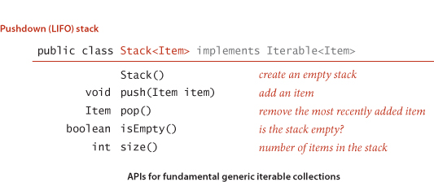
An essential characteristic of collection ADTs is that we should be able to use them for any type of data. A specific Java mechanism known as generics, also known as parameterized types, enables this capability. The impact of generics on the programming language is sufficiently deep that they are not found in many languages (including early versions of Java), but our use of them in the present context involves just a small bit of extra Java syntax and is easy to understand. The notation <Item> after the class name in each of our APIs defines the name Item as a type parameter, a symbolic placeholder for some concrete type to be used by the client. You can read Stack<Item> as “stack of items.” When implementing Stack, we do not know the concrete type of Item, but a client can use our stack for any type of data, including one defined long after we develop our implementation. The client code provides a concrete type when the stack is created: we can replace Item with the name of any reference data type (consistently, everywhere it appears). This provides exactly the capability that we need. For example, you can write code such as
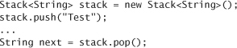
to use a stack for String objects and code such as
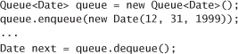
to use a queue for Date objects. If you try to add a Date (or data of any other type than String) to stack or a String (or data of any other type than Date) to queue, you will get a compile-time error. Without generics, we would have to define (and implement) different APIs for each type of data we might need to collect; with generics, we can use one API (and one implementation) for all types of data, even types that are implemented in the future. As you will soon see, generic types lead to clear client code that is easy to understand and debug, so we use them throughout this book.
Type parameters have to be instantiated as reference types, so Java has special mechanisms to allow generic code to be used with primitive types. Recall that Java’s wrapper types are reference types that correspond to primitive types: Boolean, Byte, Character, Double, Float, Integer, Long, and Short correspond to boolean, byte, char, double, float, int, long, and short, respectively. Java automatically converts between these reference types and the corresponding primitive types—in assignments, method arguments, and arithmetic/logic expressions. In the present context, this conversion is helpful because it enables us to use generics with primitive types, as in the following code:
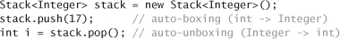
Automatically casting a primitive type to a wrapper type is known as autoboxing, and automatically casting a wrapper type to a primitive type is known as auto-unboxing. In this example, Java automatically casts (autoboxes) the primitive value 17 to be of type Integer when we pass it to the push() method. The pop() method returns an Integer, which Java casts (auto-unboxes) to an int before assigning it to the variable i.
For many applications, the client’s requirement is just to process each of the items in some way, or to iterate through the items in the collection. This paradigm is so important that it has achieved first-class status in Java and many other modern languages (the programming language itself has specific mechanisms to support it, not just the libraries). With it, we can write clear and compact code that is free from dependence on the details of a collection’s implementation. For example, suppose that a client maintains a collection of transactions in a Queue, as follows:
Queue<Transaction> collection = new Queue<Transaction>();
If the collection is iterable, the client can print a transaction list with a single statement:
for (Transaction t : collection)
{ StdOut.println(t); }
This construct is known as the foreach statement: you can read the for statement as for each transaction t in the collection, execute the following block of code. This client code does not need to know anything about the representation or the implementation of the collection; it just wants to process each of the items in the collection. The same for loop would work with a Bag of transactions or any other iterable collection. We could hardly imagine client code that is more clear and compact. As you will see, supporting this capability requires extra effort in the implementation, but this effort is well worthwhile.
IT IS INTERESTING TO NOTE that the only differences between the APIs for Stack and Queue are their names and the names of the methods. This observation highlights the idea that we cannot easily specify all of the characteristics of a data type in a list of method signatures. In this case, the true specification has to do with the English-language descriptions that specify the rules by which an item is chosen to be removed (or to be processed next in the foreach statement). Differences in these rules are profound, part of the API, and certainly of critical importance in developing client code.
A bag is a collection where removing items is not supported—its purpose is to provide clients with the ability to collect items and then to iterate through the collected items (the client can also test if a bag is empty and find its number of items). The order of iteration is unspecified and should be immaterial to the client. To appreciate the concept, consider the idea of an avid marble collector, who might put marbles in a bag, one at a time, and periodically process all the marbles to look for one having some particular characteristic. With our Bag API, a client can add items to a bag and process them all with a foreach statement whenever needed. Such a client could use a stack or a queue, but one way to emphasize that the order in which items are processed is immaterial is to use a Bag. The class Stats at right illustrates a typical Bag client. The task is simply to compute the average and the sample standard deviation of the double values on standard input. If there are N numbers on standard input, their average is computed by adding the numbers and dividing by N; their sample standard deviation is computed by adding the squares of the difference between each number and the average, dividing by N–1, and taking the square root. The order in which the numbers are considered is not relevant for either of these calculations, so we save them in a Bag and use the foreach construct to compute each sum. Note: It is possible to compute the standard deviation without saving all the numbers (as we did for the average in Accumulator—see EXERCISE 1.2.18). Keeping the all numbers in a Bag is required for more complicated statistics.
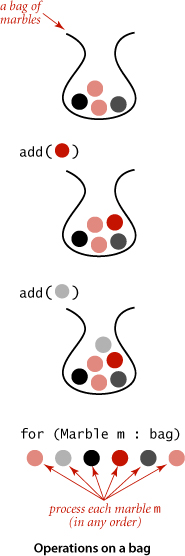
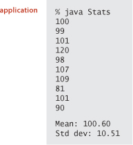
A FIFO queue (or just a queue) is a collection that is based on the first-in-first-out (FIFO) policy. The policy of doing tasks in the same order that they arrive is one that we encounter frequently in everyday life: from people waiting in line at a theater, to cars waiting in line at a toll booth, to tasks waiting to be serviced by an application on your computer. One bedrock principle of any service policy is the perception of fairness. The first idea that comes to mind when most people think about fairness is that whoever has been waiting the longest should be served first. That is precisely the FIFO discipline. Queues are a natural model for many everyday phenomena, and they play a central role in numerous applications. When a client iterates through the items in a queue with the foreach construct, the items are processed in the order they were added to the queue. A typical reason to use a queue in an application is to save items in a collection while at the same time preserving their relative order: they come out in the same order in which they were put in. For example, the client below is a possible implementation of the readInts() static method from our In class. The problem that this method solves for the client is that the client can get numbers from a file into an array without knowing the file size ahead of time. We enqueue the numbers from the file, use the size() method from Queue to find the size needed for the array, create the array, and then dequeue the numbers to move them to the array. A queue is appropriate because it puts the numbers into the array in the order in which they appear in the file (we might use a Bag if that order is immaterial). This code uses autoboxing and auto-unboxing to convert between the client’s int primitive type and the queue’s Integer wrapper type.

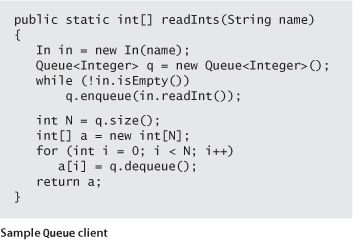
A pushdown stack (or just a stack) is a collection that is based on the last-in-first-out (LIFO) policy. When you keep your mail in a pile on your desk, you are using a stack. You pile pieces of new mail on the top when they arrive and take each piece of mail from the top when you are ready to read it. People do not process as many papers as they did in the past, but the same organizing principle underlies several of the applications that you use regularly on your computer. For example, many people organize their email as a stack—they push messages on the top when they are received and pop them from the top when they read them, with most recently received first (last in, first out). The advantage of this strategy is that we see interesting email as soon as possible; the disadvantage is that some old email might never get read if we never empty the stack. You have likely encountered another common example of a stack when surfing the web. When you click a hyperlink, your browser displays the new page (and pushes onto a stack). You can keep clicking on hyperlinks to visit new pages, but you can always revisit the previous page by clicking the back button (popping it from the stack). The LIFO policy offered by a stack provides just the behavior that you expect. When a client iterates through the items in a stack with the foreach construct, the items are processed in the reverse of the order in which they were added. A typical reason to use a stack iterator in an application is to save items in a collection while at the same time reversing their relative order. For example, the client Reverse at right reverses the order of the integers on standard input, again without having to know ahead of time how many there are. The importance of stacks in computing is fundamental and profound, as indicated in the detailed example that we consider next.
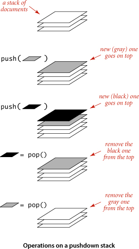
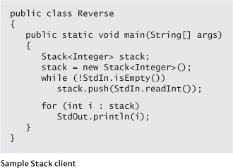
As another example of a stack client, we consider a classic example that also demonstrates the utility of generics. Some of the first programs that we considered in SECTION 1.1 involved computing the value of arithmetic expressions like this one:
( 1 + ( ( 2 + 3 ) * ( 4 * 5 ) ) )
If you multiply 4 by 5, add 3 to 2, multiply the result, and then add 1, you get the value 101. But how does the Java system do this calculation? Without going into the details of how the Java system is built, we can address the essential ideas by writing a Java program that can take a string as input (the expression) and produce the number represented by the expression as output. For simplicity, we begin with the following explicit recursive definition: an arithmetic expression is either a number, or a left parenthesis followed by an arithmetic expression followed by an operator followed by another arithmetic expression followed by a right parenthesis. For simplicity, this definition is for fully parenthesized arithmetic expressions, which specify precisely which operators apply to which operands—you are a bit more familiar with expressions such as 1 + 2 * 3, where we often rely on precedence rules instead of parentheses. The same basic mechanisms that we consider can handle precedence rules, but we avoid that complication. For specificity, we support the familiar binary operators *, +, -, and /, as well as a square-root operator sqrt that takes just one argument. We could easily allow more operators and more kinds of operators to embrace a large class of familiar mathematical expressions, involving trigonometric, exponential, and logarithmic functions. Our focus is on understanding how to interpret the string of parentheses, operators, and numbers to enable performing in the proper order the low-level arithmetic operations that are available on any computer. Precisely how can we convert an arithmetic expression—a string of characters—to the value that it represents? A remarkably simple algorithm that was developed by E. W. Dijkstra in the 1960s uses two stacks (one for operands and one for operators) to do this job. An expression consists of parentheses, operators, and operands (numbers). Proceeding from left to right and taking these entities one at a time, we manipulate the stacks according to four possible cases, as follows:
• Push operands onto the operand stack.
• Push operators onto the operator stack.
• Ignore left parentheses.
• On encountering a right parenthesis, pop an operator, pop the requisite number of operands, and push onto the operand stack the result of applying that operator to those operands.
After the final right parenthesis has been processed, there is one value on the stack, which is the value of the expression. This method may seem mysterious at first, but it is easy to convince yourself that it computes the proper value: any time the algorithm encounters a subexpression consisting of two operands separated by an operator, all surrounded by parentheses, it leaves the result of performing that operation on those operands on the operand stack. The result is the same as if that value had appeared in the input instead of the subexpression, so we can think of replacing the subexpression by the value to get an expression that would yield the same result. We can apply this argument again and again until we get a single value. For example, the algorithm computes the same value for all of these expressions:
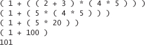
Evaluate on the previous page is an implementation of this algorithm. This code is a simple example of an interpreter: a program that interprets the computation specified by a given string and performs the computation to arrive at the result.
To address the issue of implementing Bag, Stack and Queue, we begin with a simple classic implementation, then address improvements that lead us to implementations of the APIs articulated on page 121.
As a strawman, we consider an abstract data type for a fixed-capacity stack of strings, shown on the opposite page. The API differs from our Stack API: it works only for String values, it requires the client to specify a capacity, and it does not support iteration. The primary choice in developing an API implementation is to choose a representation for the data. For FixedCapacityStackOfStrings, an obvious choice is to use an array of String values. Pursuing this choice leads to the implementation shown at the bottom on the opposite page, which could hardly be simpler (each method is a one-liner). The instance variables are an array a[] that holds the items in the stack and an integer N that counts the number of items in the stack. To remove an item, we decrement N and then return a[N]; to insert a new item, we set a[N] equal to the new item and then increment N. These operations preserve the following properties:
• The items in the array are in their insertion order.
• The stack is empty when N is 0.
• The top of the stack (if it is nonempty) is at a[N-1].
As usual, thinking in terms of invariants of this sort is the easiest way to verify that an implementation operates as intended. Be sure that you fully understand this implementation. The best way to do so is to examine a trace of the stack contents for a sequence of operations, as illustrated at left for the test client, which reads strings from standard input and pushes each string onto a stack, unless it is "-", when it pops the stack and prints the result. The primary performance characteristic of this implementation is that the push and pop operations take time independent of the stack size. For many applications, it is the method of choice because of its simplicity. But it has several drawbacks that limit its potential applicability as a general-purpose tool, which we now address. With a moderate amount of effort (and some help from Java language mechanisms), we can develop an implementation that is broadly useful. This effort is worthwhile because the implementations that we develop serve as a model for implementations of other, more powerful, abstract data types throughout the book.
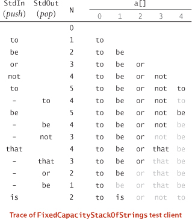
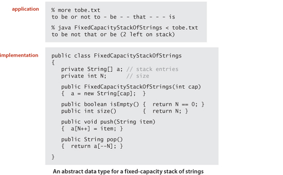
The first drawback of FixedCapacityStackOfStrings is that it works only for String objects. If we want a stack of double values, we would need to develop another class with similar code, essentially replacing String with double everywhere. This is easy enough but becomes burdensome when we consider building a stack of Transaction values or a queue of Date values, and so forth. As discussed on page 122, Java’s parameterized types (generics) are specifically designed to address this situation, and we saw several examples of client code (on pages 125, 126, 127, and 129). But how do we implement a generic stack? The code on the facing page shows the details. It implements a class FixedCapacityStack that differs from FixedCapacityStackOfStrings only in the code highlighted in red—we replace every occurrence of String with Item (with one exception, discussed below) and declare the class with the following first line of code:
public class FixedCapacityStack<Item>
The name Item is a type parameter, a symbolic placeholder for some concrete type to be used by the client. You can read FixedCapacityStack<Item> as stack of items, which is precisely what we want. When implementing FixedCapacityStack, we do not know the actual type of Item, but a client can use our stack for any type of data by providing a concrete type when the stack is created. Concrete types must be reference types, but clients can depend on autoboxing to convert primitive types to their corresponding wrapper types. Java uses the type parameter Item to check for type mismatch errors—even though no concrete type is yet known, variables of type Item must be assigned values of type Item, and so forth. But there is one significant hitch in this story: We would like to implement the constructor in FixedCapacityStack with the code
a = new Item[cap];
which calls for creation of a generic array. For historical and technical reasons beyond our scope, generic array creation is disallowed in Java. Instead, we need to use a cast:
a = (Item[]) new Object[cap];
This code produces the desired effect (though the Java compiler gives a warning, which we can safely ignore), and we use this idiom throughout the book (the Java system library implementations of similar abstract data types use the same idiom).
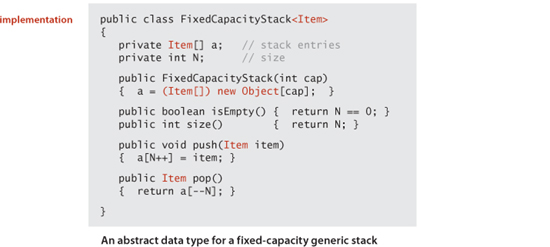
Choosing an array to represent the stack contents implies that clients must estimate the maximum size of the stack ahead of time. In Java, we cannot change the size of an array once created, so the stack always uses space proportional to that maximum. A client that chooses a large capacity risks wasting a large amount of memory at times when the collection is empty or nearly empty. For example, a transaction system might involve billions of items and thousands of collections of them. Such a client would have to allow for the possibility that each of those collections could hold all of those items, even though a typical constraint in such systems is that each item can appear in only one collection. Moreover, every client risks overflow if the collection grows larger than the array. For this reason, push() needs code to test for a full stack, and we should have an isFull() method in the API to allow clients to test for that condition. We omit that code, because our desire is to relieve the client from having to deal with the concept of a full stack, as articulated in our original Stack API. Instead, we modify the array implementation to dynamically adjust the size of the array a[] so that it is both sufficiently large to hold all of the items and not so large as to waste an excessive amount of space. Achieving these goals turns out to be remarkably easy. First, we implement a method that moves a stack into an array of a different size:
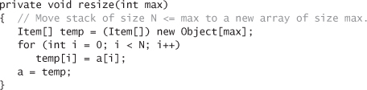
Now, in push(), we check whether the array is too small. In particular, we check whether there is room for the new item in the array by checking whether the stack size N is equal to the array size a.length. If there is no room, we double the size of the array. Then we simply insert the new item with the code a[N++] = item, as before:
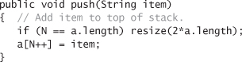
Similarly, in pop(), we begin by deleting the item, then we halve the array size if it is too large. If you think a bit about the situation, you will see that the appropriate test is whether the stack size is less than one-fourth the array size. After the array is halved, it will be about half full and can accommodate a substantial number of push() and pop() operations before having to change the size of the array again.
With this implementation, the stack never overflows and never becomes less than one-quarter full (unless the stack is empty, when the array size is 1). We will address the performance analysis of this approach in more detail in SECTION 1.4.
Java’s garbage collection policy is to reclaim the memory associated with any objects that can no longer be accessed. In our pop() implementations, the reference to the popped item remains in the array. The item is effectively an orphan—it will be never be accessed again—but the Java garbage collector has no way to know this until it is overwritten. Even when the client is done with the item, the reference in the array may keep it alive. This condition (holding a reference to an item that is no longer needed) is known as loitering. In this case, loitering is easy to avoid, by setting the array entry corresponding to the popped item to null, thus overwriting the unused reference and making it possible for the system to reclaim the memory associated with the popped item when the client is finished with it.
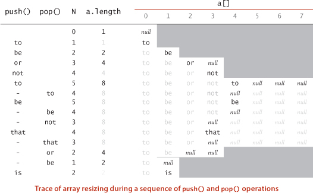
As mentioned earlier in this section, one of the fundamental operations on collections is to process each item by iterating through the collection using Java’s foreach statement. This paradigm leads to clear and compact code that is free from dependence on the details of a collection’s implementation. To consider the task of implementing iteration, we start with a snippet of client code that prints all of the items in a collection of strings, one per line:
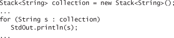
Now, this foreach statement is shorthand for a while construct (just like the for statement itself). It is essentially equivalent to the following while statement:
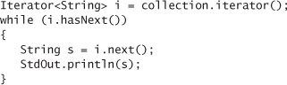
This code exposes the ingredients that we need to implement in any iterable collection:
• The collection must implement an iterator() method that returns an Iterator object.
• The Iterator class must include two methods: hasNext() (which returns a boolean value) and next() (which returns a generic item from the collection).
In Java, we use the interface mechanism to express the idea that a class implements a specific method (see page 100). For iterable collections, the necessary interfaces are already defined for us in Java. To make a class iterable, the first step is to add the phrase implements Iterable<Item> to its declaration, matching the interface
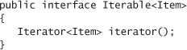
(which is in java.lang.Iterable), and to add a method iterator() to the class that returns an Iterator<Item>. Iterators are generic, so we can use our parameterized type Item to allow clients to iterate through objects of whatever type is provided by our client. For the array representation that we have been using, we need to iterate through an array in reverse order, so we name the iterator ReverseArrayIterator and add this method:
public Iterator<Item> iterator()
{ return new ReverseArrayIterator(); }
What is an iterator? An object from a class that implements the methods hasNext() and next(), as defined in the following interface (which is in java.util.Iterator):
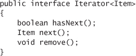
Although the interface specifies a remove() method, we always use an empty method for remove() in this book, because interleaving iteration with operations that modify the data structure is best avoided. For ReverseArrayIterator, these methods are all one-liners, implemented in a nested class within our stack class:
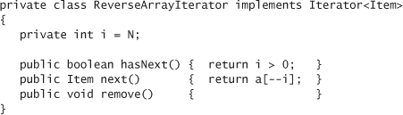
Note that this nested class can access the instance variables of the enclosing class, in this case a[] and N (this ability is the main reason we use nested classes for iterators). Technically, to conform to the Iterator specification, we should throw exceptions in two cases: an UnsupportedOperationException if a client calls remove() and a NoSuchElementException if a client calls next() when i is 0. Since we only use iterators in the foreach construction where these conditions do not arise, we omit this code. One crucial detail remains: we have to include
import java.util.Iterator;
at the beginning of the program because (for historical reasons) Iterator is not part of java.lang (even though Iterable is part of java.lang). Now a client using the foreach statement for this class will get behavior equivalent to the common for loop for arrays, but does not need to be aware of the array representation (an implementation detail). This arrangement is of critical importance for implementations of fundamental data types like the collections that we consider in this book and those included in Java libraries. For example, it frees us to switch to a totally different representation without having to change any client code. More important, taking the client’s point of view, it allows clients to use iteration without having to know any details of the class implementation.
ALGORITHM 1.1 is an implementation of our Stack API that resizes the array, allows clients to make stacks for any type of data, and supports client use of foreach to iterate through the stack items in LIFO order. This implementation is based on Java language nuances involving Iterator and Iterable, but there is no need to study those nuances in detail, as the code itself is not complicated and can be used as a template for other collection implementations.
For example, we can implement the Queue API by maintaining two indices as instance variables, a variable head for the beginning of the queue and a variable tail for the end of the queue. To remove an item, use head to access it and then increment head; to insert an item, use tail to store it, and then increment tail. If incrementing an index brings it past the end of the array, reset it to 0. Developing the details of checking when the queue is empty and when the array is full and needs resizing is an interesting and worthwhile programming exercise (see EXERCISE 1.3.14).
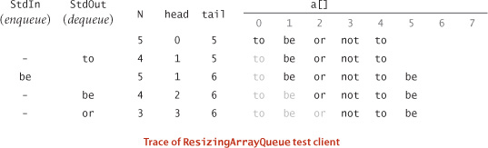
In the context of the study of algorithms, ALGORITHM 1.1 is significant because it almost (but not quite) achieves optimum performance goals for any collection implementation:
• Each operation should require time independent of the collection size.
• The space used should always be within a constant factor of the collection size.
The flaw in ResizingArrayStack is that some push and pop operations require resizing: this takes time proportional to the size of the stack. Next, we consider a way to correct this flaw, using a fundamentally different way to structure data.
Now we consider the use of a fundamental data structure that is an appropriate choice for representing the data in a collection ADT implementation. This is our first example of building a data structure that is not directly supported by the Java language. Our implementation serves as a model for the code that we use for building more complex data structures throughout the book, so you should read this section carefully, even if you have experience working with linked lists.
The node in this definition is an abstract entity that might hold any kind of data, in addition to the node reference that characterizes its role in building linked lists. As with a recursive program, the concept of a recursive data structure can be a bit mindbending at first, but is of great value because of its simplicity.
With object-oriented programming, implementing linked lists is not difficult. We start with a nested class that defines the node abstraction:

A Node has two instance variables: an Item (a parameterized type) and a Node. We define Node within the class where we want to use it, and make it private because it is not for use by clients. As with any data type, we create an object of type Node by invoking the (no-argument) constructor with new Node(). The result is a reference to a Node object whose instance variables are both initialized to the value null. The Item is a placeholder for any data that we might want to structure with a linked list (we will use Java’s generic mechanism so that it can represent any reference type); the instance variable of type Node characterizes the linked nature of the data structure. To emphasize that we are just using the Node class to structure the data, we define no methods and we refer directly to the instance variables in code: if first is a variable associated with an object of type Node, we can refer to the instance variables with the code first.item and first.next. Classes of this kind are sometimes called records. They do not implement abstract data types because we refer directly to instance variables. However, Node and its client code are in the same class in all of our implementations and not accessible by clients of that class, so we still enjoy the benefits of data abstraction.
Now, from the recursive definition, we can represent a linked list with a variable of type Node simply by ensuring that its value is either null or a reference to a Node whose next field is a reference to a linked list. For example, to build a linked list that contains the items to, be, and or, we create a Node for each item:
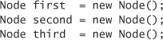
and set the item field in each of the nodes to the desired value (for simplicity, these examples assume that Item is String):
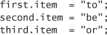
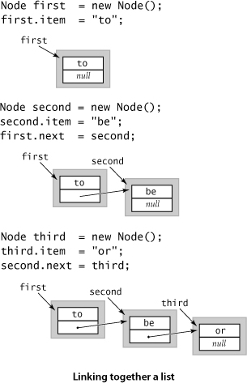
and set the next fields to build the linked list:
first.next = second;
second.next = third;
(Note that third.next remains null, the value it was initialized to at the time of creation.)As a result, third is a linked list (it is a reference to a node that has a reference to null, which is the null reference to an empty linked list), and second is a linked list (it is a reference to a node that has a reference to third, which is a linked list), and first is a linked list (it is a reference to a node that has a reference to second, which is a linked list). The code that we will examine does these assignment statements in a different order, depicted in the diagram on this page.
A LINKED LIST REPRESENTS A SEQUENCE of items. In the example just considered, first represents the sequence to be or. We can also use an array to represent a sequence of items. For example, we could use
String[] s = { "to", "be", "or" };
to represent the same sequence of strings. The difference is that it is easier to insert items into the sequence and to remove items from the sequence with linked lists. Next, we consider code to accomplish these tasks.
When tracing code that uses linked lists and other linked structures, we use a visual representation where
• We draw a rectangle to represent each object
• We put the values of instance variables within the rectangle
• We use arrows that point to the referenced objects to depict references
This visual representation captures the essential characteristic of linked lists. For economy, we use the term links to refer to node references. For simplicity, when item values are strings (as in our examples), we put the string within the object rectangle rather than the more accurate rendition depicting the string object and the character array that we discussed in SECTION 1.2. This visual representation allows us to focus on the links.
First, suppose that you want to insert a new node into a linked list. The easiest place to do so is at the beginning of the list. For example, to insert the string not at the beginning of a given linked list whose first node is first, we save first in oldfirst, assign to first a new Node, and assign its item field to not and its next field to oldfirst. This code for inserting a node at the beginning of a linked list involves just a few assignment statements, so the amount of time that it takes is independent of the length of the list.
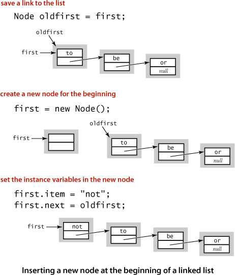
Next, suppose that you want to remove the first node from a list. This operation is even easier: simply assign to first the value first.next. Normally, you would retrieve the value of the item (by assigning it to some variable of type Item) before doing this assignment, because once you change the value of first, you may not have any access to the node to which it was referring. Typically, the node object becomes an orphan, and the Java memory management system eventually reclaims the memory it occupies. Again, this operation just involves one assignment statement, so its running time is independent of the length of the list.
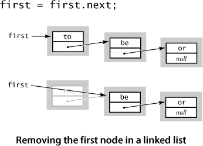
How do we add a node to the end of a linked list? To do so, we need a link to the last node in the list, because that node’s link has to be changed to reference a new node containing the item to be inserted. Maintaining an extra link is not something that should be taken lightly in linked-list code, because every method that modifies the list needs code to check whether that variable needs to be modified (and to make the necessary modifications). For example, the code that we just examined for removing the first node in the list might involve changing the reference to the last node in the list, since when there is only one node in the list, it is both the first one and the last one! Also, this code does not work (it follows a null link) in the case that the list is empty. Details like these make linked-list code notoriously difficult to debug.
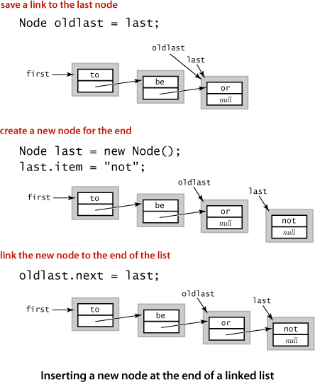
In summary, we have shown that we can implement the following operations on linked lists with just a few instructions, provided that we have access to both a link first to the first element in the list and a link last to the last element in the list:
• Insert at the beginning.
• Remove from the beginning.
• Insert at the end.
Other operations, such as the following, are not so easily handled:
• Remove a given node.
• Insert a new node before a given node.
For example, how can we remove the last node from a list? The link last is no help, because we need to set the link in the previous node in the list (the one with the same value as last) to null. In the absence of any other information, the only solution is to traverse the entire list looking for the node that links to last (see below and EXERCISE 1.3.19). Such a solution is undesirable because it takes time proportional to the length of the list. The standard solution to enable arbitrary insertions and deletions is to use a doubly-linked list, where each node has two links, one in each direction. We leave the code for these operations as an exercise (see EXERCISE 1.3.31). We do not need doubly linked lists for any of our implementations.
To examine every item in an array, we use familiar code like the following loop for processing the items in an array a[]:
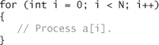
There is a corresponding idiom for examining the items in a linked list: We initialize a loop index variable x to reference the first Node of the linked list. Then we find the item associated with x by accessing x.item, and then update x to refer to the next Node in the linked list, assigning to it the value of x.next and repeating this process until x is null (which indicates that we have reached the end of the linked list). This process is known as traversing the list and is succinctly expressed in code like the following loop for processing the items in a linked list whose first item is associated with the variable first:
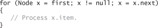
This idiom is as natural as the standard idiom for iterating through the items in an array. In our implementations, we use it as the basis for iterators for providing client code the capability of iterating through the items, without having to know the details of the linked-list implementation.
Given these preliminaries, developing an implementation for our Stack API is straightforward, as shown in ALGORITHM 1.2 on page 149. It maintains the stack as a linked list, with the top of the stack at the beginning, referenced by an instance variable first. Thus, to push() an item, we add it to the beginning of the list, using the code discussed on page 144 and to pop() an item, we remove it from the beginning of the list, using the code discussed on page 145. To implement size(), we keep track of the number of items in an instance variable N, incrementing N when we push and decrementing N when we pop. To implement isEmpty() we check whether first is null (alternatively, we could check whether N is 0). The implementation uses the generic type Item—you can think of the code <Item> after the class name as meaning that any occurrence of Item in the implementation will be replaced by a client-supplied data-type name (see page 134). For now, we omit the code to support iteration, which we consider on page 155. A trace for the test client that we have been using is shown on the next page. This use of linked lists achieves our optimum design goals:
• It can be used for any type of data.
• The space required is always proportional to the size of the collection.
• The time per operation is always independent of the size of the collection.
This implementation is a prototype for many algorithm implementations that we consider. It defines the linked-list data structure and implements the client methods push() and pop() that achieve the specified effect with just a few lines of code. The algorithms and data structure go hand in hand. In this case, the code for the algorithm implementations is quite simple, but the properties of the data structure are not at all elementary, requiring explanations on the past several pages. This interaction between data structure definition and algorithm implementation is typical and is our focus in ADT implementations throughout this book.
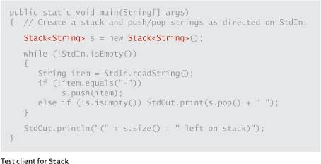
An implementation of our Queue API based on the linked-list data structure is also straightforward, as shown in ALGORITHM 1.3 on the facing page. It maintains the queue as a linked list in order from least recently to most recently added items, with the beginning of the queue referenced by an instance variable first and the end of the queue referenced by an instance variable last. Thus, to enqueue() an item, we add it to the end of the list (using the code discussed on page 145, augmented to set both first and last to refer to the new node when the list is empty) and to dequeue() an item, we remove it from the beginning of the list (using the same code as for pop() in Stack, augmented to update last when the list becomes empty). The implementations of size() and isEmpty() are the same as for Stack. As with Stack the implementation uses the generic type parameter Item, and we omit the code to support iteration, which we consider in our Bag implementation on page 155. A development client similar to the one we used for Stack is shown below, and the trace for this client is shown on the following page. This implementation uses the same data structure as does Stack—a linked list—but it implements different algorithms for adding and removing items, which make the difference between LIFO and FIFO for the client. Again, the use of linked lists achieves our optimum design goals: it can be used for any type of data, the space required is proportional to the number of items in the collection, and the time required per operation is always independent of the size of the collection.
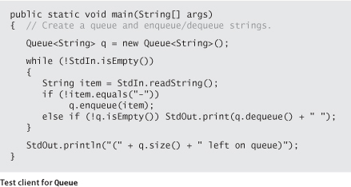
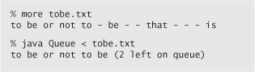
LINKED LISTS ARE A FUNDAMENTAL ALTERNATIVE to arrays for structuring a collection of data. From a historical perspective, this alternative has been available to programmers for many decades. Indeed, a landmark in the history of programming languages was the development of LISP by John McCarthy in the 1950s, where linked lists are the primary structure for programs and data. Programming with linked lists presents all sorts of challenges and is notoriously difficult to debug, as you can see in the exercises. In modern code, the use of safe pointers, automatic garbage collection (see page 111), and ADTs allows us to encapsulate list-processing code in just a few classes such as the ones presented here.
Implementing our Bag API using a linked-list data structure is simply a matter of changing the name of push() in Stack to add() and removing the implementation of pop(), as shown in ALGORITHM 1.4 on the facing page (doing the same for Queue would also be effective but requires a bit more code). This implementation also highlights the code needed to make Stack, Queue, and Bag all iterable, by traversing the list. For Stack the list is in LIFO order; for Queue it is in FIFO order; and for Bag it happens to be in LIFO order, but the order is not relevant. As detailed in the highlighted code in ALGORITHM 1.4, to implement iteration in a collection, the first step is to include
import java.util.Iterator;
so that our code can refer to Java’s Iterator interface. The second step is to add
implements Iterable<Item>
to the class declaration, a promise to provide an iterator() method. The iterator() method itself simply returns an object from a class that implements the Iterator interface:
public Iterator<Item> iterator()
{ return new ListIterator(); }
This code is a promise to implement a class that implements the hasNext(), next(), and remove() methods that are called when a client uses the foreach construct. To implement these methods, the nested class ListIterator in ALGORITHM 1.4 maintains an instance variable current that keeps track of the current node on the list. Then the hasNext() method tests if current is null, and the next() method saves a reference to the current item, updates current to refer to the next node on the list, and returns the saved reference.
The implementations of bags, queues, and stacks that support generics and iteration that we have considered in this section provide a level of abstraction that allows us to write compact client programs that manipulate collections of objects. Detailed understanding of these ADTs is important as an introduction to the study of algorithms and data structures for three reasons. First, we use these data types as building blocks in higher-level data structures throughout this book. Second, they illustrate the interplay between data structures and algorithms and the challenge of simultaneously achieving natural performance goals that may conflict. Third, the focus of several of our implementations is on ADTs that support more powerful operations on collections of objects, and we use the implementations here as starting points.
We now have two ways to represent collections of objects, arrays and linked lists. Arrays are built in to Java; linked lists are easy to build with standard Java records. These two alternatives, often referred to as sequential allocation and linked allocation, are fundamental. Later in the book, we develop ADT implementations that combine and extend these basic structures in numerous ways. One important extension is to data structures with multiple links. For example, our focus in SECTIONS 3.2 and 3.3 is on data structures known as binary trees that are built from nodes that each have two links. Another important extension is to compose data structures: we can have a bag of stacks, a queue of arrays, and so forth. For example, our focus in CHAPTER 4 is on graphs, which we represent as arrays of bags. It is very easy to define data structures of arbitrary complexity in this way: one important reason for our focus on abstract data types is an attempt to control such complexity.
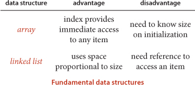
OUR TREATMENT OF BAGS, QUEUES, AND STACKS in this section is a prototypical example of the approach that we use throughout this book to describe data structures and algorithms. In approaching a new applications domain, we identify computational challenges and use data abstraction to address them, proceeding as follows:
• Specify an API.
• Develop client code with reference to specific applications.
• Describe a data structure (representation of the set of values) that can serve as the basis for the instance variables in a class that will implement an ADT that meets the specification in the API.
• Describe algorithms (approaches to implementing the set of operations) that can serve as the basis for implementing the instance methods in the class.
• Analyze the performance characteristics of the algorithms.
In the next section, we consider this last step in detail, as it often dictates which algorithms and implementations can be most useful in addressing real-world applications.
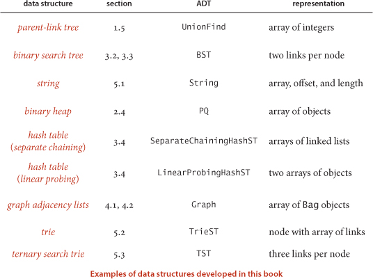
Q. Not all programming languages have generics, even early versions of Java. What are the alternatives?
A. One alternative is to maintain a different implementation for each type of data, as mentioned in the text. Another is to build a stack of Object values, then cast to the desired type in client code for pop(). The problem with this approach is that type mismatch errors cannot be detected until run time. But with generics, if you write code to push an object of the wrong type on the stack, like this:
you will get a compile-time error:
push(Apple) in Stack<Apple> cannot be applied to (Orange)
This ability to discover such errors at compile time is reason enough to use generics.
Q. Why does Java disallow generic arrays?
A. Experts still debate this point. You might need to become one to understand it! For starters, learn about covariant arrays and type erasure.
Q. How do I create an array of stacks of strings?
A. Use a cast, such as the following:
Warning: This cast, in client code, is different from the one described on page 134. You might have expected to use Object instead of Stack. When using generics, Java checks for type safety at compile time, but throws away that information at run time, so it is left with Stack<Object>[] or just Stack[], for short, which we must cast to Stack<String>[].
Q. What happens if my program calls pop() for an empty stack?
A. It depends on the implementation. For our implementation on page 149, you will get a NullPointerException. In our implementations on the booksite, we throw a runtime exception to help users pinpoint the error. Generally, including as many such checks as possible is wise in code that is likely to be used by many people.
Q. Why do we care about resizing arrays, when we have linked lists?
A. We will see several examples of ADT implementations that need to use arrays to perform other operations that are not easily supported with linked lists. ResizingArrayStack is a model for keeping their memory usage under control.
Q. Why declare Node as a nested class? Why private?
A. By declaring the nested class Node to be private, we restrict access to methods and instance variables within the enclosing class. One characteristic of a private nested class is that its instance variables can be directly accessed from within the enclosing class but nowhere else, so there is no need to declare the instance variables public or private. Note for experts: A nested class that is not static is known as an inner class, so technically our Node classes are inner classes, though the ones that are not generic could be static.
Q. When I type javac Stack.java to run ALGORITHM 1.2 and similar programs, I find Stack.class and a file Stack$Node.class. What is the purpose of that second one?
A. That file is for the inner class Node. Java’s naming convention is to use $ to separate the name of the outer class from the inner class.
Q. Are there Java libraries for stacks and queues?
A. Yes and no. Java has a built-in library called java.util.Stack, but you should avoid using it when you want a stack. It has several additional operations that are not normally associated with a stack, e.g., getting the ith element. It also allows adding an element to the bottom of the stack (instead of the top), so it can implement a queue! Although having such extra operations may appear to be a bonus, it is actually a curse. We use data types not just as libraries of all the operations we can imagine, but also as a mechanism to precisely specify the operations we need. The prime benefit of doing so is that the system can prevent us from performing operations that we do not actually want. The java.util.Stack API is an example of a wide interface, which we generally strive to avoid.
Q. Should a client be allowed to insert null items onto a stack or queue?
A. This question arises frequently when implementing collections in Java. Our implementation (and Java’s stack and queue libraries) do permit the insertion of null values.
Q. What should the Stack iterator do if the client calls push() or pop() during iterator?
A. Throw a java.util.ConcurrentModificationException to make it a fail-fast iterator. See 1.3.50.
Q. Can I use a foreach loop with arrays?
A. Yes (even though arrays do not implement the Iterable interface). The following one-liner prints out the command-line arguments:
public static void main(String[] args)
{ for (String s : args) StdOut.println(s); }
Q. Can I use a foreach loop with strings?
A. No. String does not implement Iterable.
Q. Why not have a single Collection data type that implements methods to add items, remove the most recently inserted, remove the least recently inserted, remove random, iterate, return the number of items in the collection, and whatever other operations we might desire? Then we could get them all implemented in a single class that could be used by many clients.
A. Again, this is an example of a wide interface. Java has such implementations in its java.util.ArrayList and java.util.LinkedList classes. One reason to avoid them is that it there is no assurance that all operations are implemented efficiently. Throughout this book, we use APIs as starting points for designing efficient algorithms and data structures, which is certainly easier to do for interfaces with just a few operations as opposed to an interface with many operations. Another reason to insist on narrow interfaces is that they enforce a certain discipline on client programs, which makes client code much easier to understand. If one client uses Stack<String> and another uses Queue<Transaction>, we have a good idea that the LIFO discipline is important to the first and the FIFO discipline is important to the second.
1.3.1 Add a method isFull() to FixedCapacityStackOfStrings.
1.3.2 Give the output printed by java Stack for the input
it was - the best - of times - - - it was - the - -
1.3.3 Suppose that a client performs an intermixed sequence of (stack) push and pop operations. The push operations put the integers 0 through 9 in order onto the stack; the pop operations print out the return values. Which of the following sequence(s) could not occur?
a. 4 3 2 1 0 9 8 7 6 5
b. 4 6 8 7 5 3 2 9 0 1
c. 2 5 6 7 4 8 9 3 1 0
d. 4 3 2 1 0 5 6 7 8 9
e. 1 2 3 4 5 6 9 8 7 0
f. 0 4 6 5 3 8 1 7 2 9
g. 1 4 7 9 8 6 5 3 0 2
h. 2 1 4 3 6 5 8 7 9 0
1.3.4 Write a stack client Parentheses that reads in a text stream from standard input and uses a stack to determine whether its parentheses are properly balanced. For example, your program should print true for [()]{}{[()()]()} and false for [(]).
1.3.5 What does the following code fragment print when N is 50? Give a high-level description of what it does when presented with a positive integer N.
Answer: Prints the binary representation of N (110010 when N is 50).
1.3.6 What does the following code fragment do to the queue q?
1.3.7 Add a method peek() to Stack that returns the most recently inserted item on the stack (without popping it).
1.3.8 Give the contents and size of the array for DoublingStackOfStrings with the input
it was - the best - of times - - - it was - the - -
1.3.9 Write a program that takes from standard input an expression without left parentheses and prints the equivalent infix expression with the parentheses inserted. For example, given the input:
1 + 2 ) * 3 - 4 ) * 5 - 6 ) ) )
your program should print
( ( 1 + 2 ) * ( ( 3 - 4 ) * ( 5 - 6 ) ) )
1.3.10 Write a filter InfixToPostfix that converts an arithmetic expression from infix to postfix.
1.3.11 Write a program EvaluatePostfix that takes a postfix expression from standard input, evaluates it, and prints the value. (Piping the output of your program from the previous exercise to this program gives equivalent behavior to Evaluate.)
1.3.12 Write an iterable Stack client that has a static method copy() that takes a stack of strings as argument and returns a copy of the stack. Note: This ability is a prime example of the value of having an iterator, because it allows development of such functionality without changing the basic API.
1.3.13 Suppose that a client performs an intermixed sequence of (queue) enqueue and dequeue operations. The enqueue operations put the integers 0 through 9 in order onto the queue; the dequeue operations print out the return value. Which of the following sequence(s) could not occur?
a. 0 1 2 3 4 5 6 7 8 9
b. 4 6 8 7 5 3 2 9 0 1
c. 2 5 6 7 4 8 9 3 1 0
d. 4 3 2 1 0 5 6 7 8 9
1.3.14 Develop a class ResizingArrayQueueOfStrings that implements the queue abstraction with a fixed-size array, and then extend your implementation to use array resizing to remove the size restriction.
1.3.15 Write a Queue client that takes a command-line argument k and prints the kth from the last string found on standard input (assuming that standard input has k or more strings).
1.3.16 Using readInts() on page 126 as a model, write a static method readDates() for Date that reads dates from standard input in the format specified in the table on page 119 and returns an array containing them.
1.3.17 Do EXERCISE 1.3.16 for Transaction.
This list of exercises is intended to give you experience in working with linked lists. Suggestion: make drawings using the visual representation described in the text.
1.3.18 Suppose x is a linked-list node and not the last node on the list. What is the effect of the following code fragment?
x.next = x.next.next;
Answer: Deletes from the list the node immediately following x.
1.3.19 Give a code fragment that removes the last node in a linked list whose first node is first.
1.3.20 Write a method delete() that takes an int argument k and deletes the kth element in a linked list, if it exists.
1.3.21 Write a method find() that takes a linked list and a string key as arguments and returns true if some node in the list has key as its item field, false otherwise.
1.3.22 Suppose that x is a linked list Node. What does the following code fragment do?
t.next = x.next;
x.next = t;
Answer: Inserts node t immediately after node x.
1.3.23 Why does the following code fragment not do the same thing as in the previous question?
x.next = t;
t.next = x.next;
Answer: When it comes time to update t.next, x.next is no longer the original node following x, but is instead t itself!
1.3.24 Write a method removeAfter() that takes a linked-list Node as argument and removes the node following the given one (and does nothing if the argument or the next field in the argument node is null).
1.3.25 Write a method insertAfter() that takes two linked-list Node arguments and inserts the second after the first on its list (and does nothing if either argument is null).
1.3.26 Write a method remove() that takes a linked list and a string key as arguments and removes all of the nodes in the list that have key as its item field.
1.3.27 Write a method max() that takes a reference to the first node in a linked list as argument and returns the value of the maximum key in the list. Assume that all keys are positive integers, and return 0 if the list is empty.
1.3.28 Develop a recursive solution to the previous question.
1.3.29 Write a Queue implementation that uses a circular linked list, which is the same as a linked list except that no links are null and the value of last.next is first whenever the list is not empty. Keep only one Node instance variable (last).
1.3.30 Write a function that takes the first Node in a linked list as argument and (destructively) reverses the list, returning the first Node in the result.
Iterative solution: To accomplish this task, we maintain references to three consecutive nodes in the linked list, reverse, first, and second. At each iteration, we extract the node first from the original linked list and insert it at the beginning of the reversed list. We maintain the invariant that first is the first node of what’s left of the original list, second is the second node of what’s left of the original list, and reverse is the first node of the resulting reversed list.
When writing code involving linked lists, we must always be careful to properly handle the exceptional cases (when the linked list is empty, when the list has only one or two nodes) and the boundary cases (dealing with the first or last items). This is usually much trickier than handling the normal cases.
Recursive solution: Assuming the linked list has N nodes, we recursively reverse the last N–1 nodes, and then carefully append the first node to the end.
1.3.31 Implement a nested class DoubleNode for building doubly-linked lists, where each node contains a reference to the item preceding it and the item following it in the list (null if there is no such item). Then implement static methods for the following tasks: insert at the beginning, insert at the end, remove from the beginning, remove from the end, insert before a given node, insert after a given node, and remove a given node.
1.3.32 Steque. A stack-ended queue or steque is a data type that supports push, pop, and enqueue. Articulate an API for this ADT. Develop a linked-list-based implementation.
1.3.33 Deque. A double-ended queue or deque (pronounced “deck”) is like a stack or a queue but supports adding and removing items at both ends. A deque stores a collection of items and supports the following API:
Write a class Deque that uses a doubly-linked list to implement this API and a class ResizingArrayDeque that uses a resizing array.
1.3.34 Random bag. A random bag stores a collection of items and supports the following API:
Write a class RandomBag that implements this API. Note that this API is the same as for Bag, except for the adjective random, which indicates that the iteration should provide the items in random order (all N! permutations equally likely, for each iterator). Hint: Put the items in an array and randomize their order in the iterator’s constructor.
1.3.35 Random queue. A random queue stores a collection of items and supports the following API:
Write a class RandomQueue that implements this API. Hint: Use an array representation (with resizing). To remove an item, swap one at a random position (indexed 0 through N-1) with the one at the last position (index N-1). Then delete and return the last object, as in ResizingArrayStack. Write a client that deals bridge hands (13 cards each) using RandomQueue<Card>.
1.3.36 Random iterator. Write an iterator for RandomQueue<Item> from the previous exercise that returns the items in random order.
1.3.37 Josephus problem. In the Josephus problem from antiquity, N people are in dire straits and agree to the following strategy to reduce the population. They arrange themselves in a circle (at positions numbered from 0 to N–1) and proceed around the circle, eliminating every Mth person until only one person is left. Legend has it that Josephus figured out where to sit to avoid being eliminated. Write a Queue client Josephus that takes M and N from the command line and prints out the order in which people are eliminated (and thus would show Josephus where to sit in the circle).
% java Josephus 2 7
1 3 5 0 4 2 6
1.3.38 Delete kth element. Implement a class that supports the following API:
First, develop an implementation that uses an array implementation, and then develop one that uses a linked-list implementation. Note: the algorithms and data structures that we introduce in CHAPTER 3 make it possible to develop an implementation that can guarantee that both insert() and delete() take time prortional to the logarithm of the number of items in the queue—see EXERCISE 3.5.27.
1.3.39 Ring buffer. A ring buffer, or circular queue, is a FIFO data structure of a fixed size N. It is useful for transferring data between asynchronous processes or for storing log files. When the buffer is empty, the consumer waits until data is deposited; when the buffer is full, the producer waits to deposit data. Develop an API for a RingBuffer and an implementation that uses an array representation (with circular wrap-around).
1.3.40 Move-to-front. Read in a sequence of characters from standard input and maintain the characters in a linked list with no duplicates. When you read in a previously unseen character, insert it at the front of the list. When you read in a duplicate character, delete it from the list and reinsert it at the beginning. Name your program MoveToFront: it implements the well-known move-to-front strategy, which is useful for caching, data compression, and many other applications where items that have been recently accessed are more likely to be reaccessed.
1.3.41 Copy a queue. Create a new constructor so that
Queue<Item> r = new Queue<Item>(q);
makes r a reference to a new and independent copy of the queue q. You should be able to push and pop from either q or r without influencing the other. Hint: Delete all of the elements from q and add these elements to both q and r.
1.3.42 Copy a stack. Create a new constructor for the linked-list implementation of Stack so that
Stack<Item> t = new Stack<Item>(s);
makes t a reference to a new and independent copy of the stack s.
1.3.43 Listing files. A folder is a list of files and folders. Write a program that takes the name of a folder as a command-line argument and prints out all of the files contained in that folder, with the contents of each folder recursively listed (indented) under that folder’s name. Hint: Use a queue, and see java.io.File.
1.3.44 Text editor buffer. Develop a data type for a buffer in a text editor that implements the following API:
Hint: Use two stacks.
1.3.45 Stack generability. Suppose that we have a sequence of intermixed push and pop operations as with our test stack client, where the integers 0, 1, ..., N-1 in that order (push directives) are intermixed with N minus signs (pop directives). Devise an algorithm that determines whether the intermixed sequence causes the stack to underflow. (You may use only an amount of space independent of N—you cannot store the integers in a data structure.) Devise a linear-time algorithm that determines whether a given permutation can be generated as output by our test client (depending on where the pop directives occur).
Solution: The stack does not overflow unless there exists an integer k such that the first k pop operations occur before the first k push operations. If a given permutation can be generated, it is uniquely generated as follows: if the next integer in the output permutation is in the top of the stack, pop it; otherwise, push it onto the stack.
1.3.46 Forbidden triple for stack generability. Prove that a permutation can be generated by a stack (as in the previous question) if and only if it has no forbidden triple (a, b, c) such that a < b < c with c first, a second, and b third (possibly with other intervening integers between c and a and between a and b).
Partial solution: Suppose that there is a forbidden triple (a, b, c). Item c is popped before a and b, but a and b are pushed before c. Thus, when c is pushed, both a and b are on the stack. Therefore, a cannot be popped before b.
1.3.47 Catenable queues, stacks, or steques. Add an extra operation catenation that (destructively) concatenates two queues, stacks, or steques (see EXERCISE 1.3.32). Hint: Use a circular linked list, maintaining a pointer to the last item.
1.3.48 Two stacks with a deque. Implement two stacks with a single deque so that each operation takes a constant number of deque operations (see EXERCISE 1.3.33).
1.3.49 Queue with a constant number of stacks. Implement a queue with a constant number of stacks so that each queue operation takes a constant (worst-case) number of stack operations. Warning: high degree of difficulty.
1.3.50 Fail-fast iterator. Modify the iterator code in Stack to immediately throw a java.util.ConcurrentModificationException if the client modifies the collection (via push() or pop()) during iteration?
Solution: Maintain a counter that counts the number of push() and pop() operations. When creating an iterator, store this value as an Iterator instance variable. Before each call to hasNext() and next(), check that this value has not changed since construction of the iterator; if it has, throw the exception.
AS PEOPLE GAIN EXPERIENCE USING COMPUTERS, they use them to solve difficult problems or to process large amounts of data and are invariably led to questions like these:
How long will my program take?
Why does my program run out of memory?
You certainly have asked yourself these questions, perhaps when rebuilding a music or photo library, installing a new application, working with a large document, or working with a large amount of experimental data. The questions are much too vague to be answered precisely—the answers depend on many factors such as properties of the particular computer being used, the particular data being processed, and the particular program that is doing the job (which implements some algorithm). All of these factors leave us with a daunting amount of information to analyze.
Despite these challenges, the path to developing useful answers to these basic questions is often remarkably straightforward, as you will see in this section. This process is based on the scientific method, the commonly accepted body of techniques used by scientists to develop knowledge about the natural world. We apply mathematical analysis to develop concise models of costs and do experimental studies to validate these models.
The very same approach that scientists use to understand the natural world is effective for studying the running time of programs:
• Observe some feature of the natural world, generally with precise measurements.
• Hypothesize a model that is consistent with the observations.
• Predict events using the hypothesis.
• Verify the predictions by making further observations.
• Validate by repeating until the hypothesis and observations agree.
One of the key tenets of the scientific method is that the experiments we design must be reproducible, so that others can convince themselves of the validity of the hypothesis. Hypotheses must also be falsifiable, so that we can know for sure when a given hypothesis is wrong (and thus needs revision). As Einstein famously is reported to have said (“No amount of experimentation can ever prove me right; a single experiment can prove me wrong”), we can never know for sure that any hypothesis is absolutely correct; we can only validate that it is consistent with our observations.
Our first challenge is to determine how to make quantitative measurements of the running time of our programs. This task is far easier than in the natural sciences. We do not have to send a rocket to Mars or kill laboratory animals or split an atom—we can simply run the program. Indeed, every time you run a program, you are performing a scientific experiment that relates the program to the natural world and answers one of our core questions: How long will my program take?
Our first qualitative observation about most programs is that there is a problem size that characterizes the difficulty of the computational task. Normally, the problem size is either the size of the input or the value of a command-line argument. Intuitively, the running time should increase with problem size, but the question of by how much it increases naturally comes up every time we develop and run a program.
Another qualitative observation for many programs is that the running time is relatively insensitive to the input itself; it depends primarily on the problem size. If this relationship does not hold, we need to take steps to better understand and perhaps better control the running time’s sensitivity to the input. But it does often hold, so we now focus on the goal of better quantifying the relationship between problem size and running time.
As a running example, we will work with the program ThreeSum shown here, which counts the number of triples in a file of N integers that sum to 0 (assuming that overflow plays no role). This computation may seem contrived to you, but it is deeply related to numerous fundamental computational tasks (for example, see EXERCISE 1.4.26). As a test input, consider the file 1Mints.txt from the booksite, which contains 1 million randomly generated int values. The second, eighth, and tenth entries in 1Mints.txt sum to 0. How many more such triples are there in the file? ThreeSum can tell us, but can it do so in a reasonable amount of time? What is the relationship between the problem size N and running time for ThreeSum? As a first experiment, try running ThreeSum on your computer for the files 1Kints.txt, 2Kints.txt, 4Kints.txt, and 8Kints.txt on the booksite that contain the first 1,000, 2,000, 4,000, and 8,000 integers from 1Mints.txt, respectively. You can quickly determine that there are 70 triples that sum to 0 in 1Kints.txt and that there are 528 triples that sum to 0 in 2Kints.txt. The program takes substantially more time to determine that there are 4,039 triples that sum to 0 in 4Kints.txt, and as you wait for the program to finish for 8Kints.txt, you will find yourself asking the question How long will my program take? As you will see, answering this question for this program turns out to be easy. Indeed, you can often come up with a fairly accurate prediction while the program is running.
Reliably measuring the exact running time of a given program can be difficult. Fortunately, we are usually happy with estimates. We want to be able to distinguish programs that will finish in a few seconds or a few minutes from those that might require a few days or a few months or more, and we want to know when one program is twice as fast as another for the same task. Still, we need accurate measurements to generate experimental data that we can use to formulate and to check the validity of hypotheses about the relationship between running time and problem size. For this purpose, we use the Stopwatch data type shown on the facing page. Its elapsedTime() method returns the elapsed time since it was created, in seconds. The implementation is based on using the Java system’s currentTimeMillis() method, which gives the current time in milliseconds, to save the time when the constructor is invoked, then uses it again to compute the elapsed time when elapsedTime() is invoked.
The program DoublingTest on the facing page is a more sophisticated Stopwatch client that produces experimental data for ThreeSum. It generates a sequence of random input arrays, doubling the array size at each step, and prints the running times of ThreeSum.count() for each input size. These experiments are certainly reproducible—you can also run them on your own computer, as many times as you like. When you run DoublingTest, you will find yourself in a prediction-verification cycle: it prints several lines very quickly, but then slows down considerably. Each time it prints a line, you find yourself wondering how long it will be until it prints the next line. Of course, since you have a different computer from ours, the actual running times that you get are likely to be different from those shown for our computer. Indeed, if your computer is twice as fast as ours, your running times will be about half ours, which leads immediately to the well-founded hypothesis that running times on different computers are likely to differ by a constant factor. Still, you will find yourself asking the more detailed question How long will my program take, as a function of the input size? To help answer this question, we plot the data. The diagrams at the bottom of the facing page show the result of plotting the data, both on a normal and on a log-log scale, with the problem size N on the x-axis and the running time T(N) on the y-axis. The log-log plot immediately leads to a hypothesis about the running time—the data fits a straight line of slope 3 on the log-log plot. The equation of such a line is
lg(T(N)) = 3 lg N + lg a
(where a is a constant) which is equivalent to
T(N) = aN3
the running time, as a function of the input size, as desired. We can use one of our data points to solve for a—for example, T(8000) = 51.1 = a80003, so a = 9.98×10−11—and then use the equation
T(N) = 9.98×10−11N3
to predict running times for large N. Informally, we are checking the hypothesis that the data points on the log-log plot fall close to this line. Statistical methods are available for doing a more careful analysis to find estimates of a and the exponent b, but our quick calculations suffice to estimate running time for most purposes. For example, we can estimate the running time on our computer for N = 16,000 to be about 9.98×10−11160003 = 408.8 seconds, or about 6.8 minutes (the actual time was 409.3 seconds). While waiting for your computer to print the line for N = 16,000 in DoublingTest, you might use this method to predict when it will finish, then check the result by waiting to see if your prediction is true.
So far, this process mirrors the process scientists use when trying to understand properties of the real world. A straight line in a log-log plot is equivalent to the hypothesis that the data fits the equation T(N) = aNb. Such a fit is known as a power law. A great many natural and synthetic phenomena are described by power laws, and it is reasonable to hypothesize that the running time of a program does, as well. Indeed, for the analysis of algorithms, we have mathematical models that strongly support this and similar hypotheses, to which we now turn.
In the early days of computer science, D. E. Knuth postulated that, despite all of the complicating factors in understanding the running times of our programs, it is possible, in principle, to build a mathematical model to describe the running time of any program. Knuth’s basic insight is simple: the total running time of a program is determined by two primary factors:
• The cost of executing each statement
• The frequency of execution of each statement
The former is a property of the computer, the Java compiler and the operating system; the latter is a property of the program and the input. If we know both for all instructions in the program, we can multiply them together and sum for all instructions in the program to get the running time.
The primary challenge is to determine the frequency of execution of the statements. Some statements are easy to analyze: for example, the statement that sets cnt to 0 in ThreeSum.count() is executed exactly once. Others require higher-level reasoning: for example, the if statement in ThreeSum.count() is executed precisely
N(N−1)(N−2)/6
times (the number of ways to pick three different numbers from the input array—see EXERCISE 1.4.1). Others depend on the input data: for example the number of times the instruction cnt++ in ThreeSum.count() is executed is precisely the number of triples that sum to 0 in the input, which could range from 0 of them to all of them. In the case of DoublingTest, where we generate the numbers randomly, it is possible to do a probabilistic analysis to determine the expected value of this quantity (see EXERCISE 1.4.40).
Frequency analyses of this sort can lead to complicated and lengthy mathematical expressions. For example, consider the count just considered of the number of times the if statement in ThreeSum is executed:
N(N−1)(N−2)/6 = N3/6 − N2/2 + N/3
As is typical in such expressions, the terms after the leading term are relatively small (for example, when N = 1,000 the value of − N2/2 + N/3 ≈ −499,667 is certainly insignificant by comparison with N3/6 ≈ 166,666,667). To allow us to ignore insignificant terms and therefore substantially simplify the mathematical formulas that we work with, we often use a mathematical device known as the tilde notation (~). This notation allows us to work with tilde approximations, where we throw away low-order terms that complicate formulas and represent a negligible contribution to values of interest:
For example, we use the approximation ~N3/6 to describe the number of times the if statement in ThreeSum is executed, since N3/6 − N2/2 + N/3 divided by N3/6 approaches 1 as N grows. Most often, we work with tilde approximations of the form g(N) ~af(N) where f(N) = Nb(log N)c with a, b, and c constants and refer to f(N) as the order of growth of g(N). When using the logarithm in the order of growth, we generally do not specify the base, since the constant a can absorb that detail. This usage covers the relatively few functions that are commonly encountered in studying the order of growth of a program’s running time shown in the table at left (with the exception of the exponential, which we defer to CONTEXT). We will describe these functions in more detail and briefly discuss why they appear in the analysis of algorithms after we complete our treatment of ThreeSum.
To follow through on Knuth’s approach to develop a mathematical expression for the total running time of a Java program, we can (in principle) study our Java compiler to find the number of machine instructions corresponding to each Java instruction and study our machine specifications to find the time of execution of each of the machine instructions, to produce a grand total. This process, for ThreeSum, is briefly summarized on the facing page. We classify blocks of Java statements by their frequency of execution, develop leading-term approximations for the frequencies, determine the cost of each statement, and then compute a total. Note that some frequencies may depend on the input. In this case, the number of times cnt++ is executed certainly depends on the input—it is the number of triples that sum to 0, and could range from 0 to ~N3/6. We stop short of exhibiting the details (values of the constants) for any particular system, except to highlight that by using constant values t0, t1, t2, ... for the time taken by the blocks of statements, we are assuming that each block of Java statements corresponds to machine instructions that require a specified fixed amount of time. A key observation from this exercise is to note that only the instructions that are executed the most frequently play a role in the final total—we refer to these instructions as the inner loop of the program. For ThreeSum, the inner loop is the statements that increment k and test that it is less than N and the statements that test whether the sum of three given numbers is 0 (and possibly the statement that implements the count, depending on the input). This behavior is typical: the running times of a great many programs depend only on a small subset of their instructions.
In summary, the experiments on page 177 and the mathematical model on page 181 both support the following hypothesis:
Throughout this book, we use the term property to refer to a hypothesis that needs to be validated through experimentation. The end result of our mathematical analysis is precisely the same as the end result of our experimental analysis—the running time of ThreeSum is ~ aN3 for a machine-dependent constant a. This match validates both the experiments and the mathematical model and also exhibits more insight about the program because it does not require experimentation to determine the exponent. With some effort, we could validate the value of a on a particular system as well, though that activity is generally reserved for experts in situations where performance is critical.
Hypotheses such as PROPERTY A are significant because they relate the abstract world of a Java program to the real world of a computer running it. Working with the order of growth allows us to take one further step: to separate a program from the algorithm it implements. The idea that the order of growth of the running time of ThreeSum is N3 does not depend on the fact that it is implemented in Java or that it is running on your laptop or someone else’s cellphone or a supercomputer; it depends primarily on the fact that it examines all the different triples of numbers in the input. The algorithm that you are using (and sometimes the input model) determines the order of growth. Separating the algorithm from the implementation on a particular computer is a powerful concept because it allows us to develop knowledge about the performance of algorithms and then apply that knowledge to any computer. For example, we might say that ThreeSum is an implementation of the brute-force algorithm “compute the sum of all different triples, counting those that sum to 0”—we expect that an implementation of this algorithm in any programming language on any computer will lead to a running time that is proportional to N3. In fact, much of the knowledge about the performance of classic algorithms was developed decades ago, but that knowledge is still relevant to today’s computers.
We focus attention on properties of algorithms by articulating a cost model that defines the basic operations used by the algorithms we are studying to solve the problem at hand. For example, an appropriate cost model for the 3-sum problem, shown at right, is the number of times we access an array entry. With this cost model, we can make precise mathematical statements about properties of an algorithm, not just a particular implementation, as follows:
We use the term proposition to refer to mathematical truths about algorithms in terms of a cost model. Throughout this book, we study the algorithms that we consider within the framework of a specific cost model. Our intent is to articulate cost models such that the order of growth of the running time for a given implementation is the same as the order of growth of the cost of the underlying algorithm (in other words, the cost model should include operations that fall within the inner loop). We seek precise mathematical results about algorithms (propositions) and also hypotheses about performance of implementations (properties) that you can check through experimentation. In this case, PROPOSITION B is a mathematical truth that supports the hypothesis stated in PROPERTY A, which we have validated with experiments, in accordance with the scientific method.
For many programs, developing a mathematical model of running time reduces to the following steps:
• Develop an input model, including a definition of the problem size.
• Identify the inner loop.
• Define a cost model that includes operations in the inner loop.
• Determine the frequency of execution of those operations for the given input. Doing so might require mathematical analysis—we will consider some examples in the context of specific fundamental algorithms later in the book.
If a program is defined in terms of multiple methods, we normally consider the methods separately. As an example, consider our example program of SECTION 1.1, BinarySearch.
Binary search. The input model is the array a[] of size N; the inner loop is the statements in the single while loop; the cost model is the compare operation (compare the values of two array entries); and the analysis, discussed in SECTION 1.1 and given in full detail in PROPOSITION B in SECTION 3.1, shows that the number of compares is at most lg N + 1.
Whitelist. The input model is the N numbers in the whitelist and the M numbers on standard input where we assume M >> N; the inner loop is the statements in the single while loop; the cost model is the compare operation (inherited from binary search); and the analysis is immediate given the analysis of binary search—the number of compares is at most M (lg N + 1).
Thus, we draw the conclusion that the order of growth of the running time of the whitelist computation is at most M lg N, subject to the following considerations:
• If N is small, the input-output cost might dominate.
• The number of compares depends on the input—it lies between ~M and ~M lgN, depending on how many of the numbers on standard input are in the whitelist and on how long the binary search takes to find the ones that are (typically it is ~M lgN).
• We are assuming that the cost of Arrays.sort() is small compared to M lg N. Arrays.sort() implements the mergesort algorithm, and in SECTION 2.2, we will see that the order of growth of the running time of mergesort is N log N (see PROPOSITION G in CHAPTER 2), so this assumption is justified.
Thus, the model supports our hypothesis from SECTION 1.1 that the binary search algorithm makes the computation feasible when M and N are large. If we double the length of the standard input stream, then we can expect the running time to double; if we double the size of the whitelist, then we can expect the running time to increase only slightly.
DEVELOPING MATHEMATICAL MODELS for the analysis of algorithms is a fruitful area of research that is somewhat beyond the scope of this book. Still, as you will see with binary search, mergesort, and many other algorithms, understanding certain mathematical models is critical to understanding the efficiency of fundamental algorithms, so we often present details and/or quote the results of classic studies. When doing so, we encounter various functions and approximations that are widely used in mathematical analysis. For reference, we summarize some of this information in the tables below.
We use just a few structural primitives (statements, conditionals, loops, nesting, and method calls) to implement algorithms, so very often the order of growth of the cost is one of just a few functions of the problem size N. These functions are summarized in the table on the facing page, along with the names that we use to refer to them, typical code that leads to each function, and examples.
A program whose running time’s order of growth is constant executes a fixed number of operations to finish its job; consequently its running time does not depend on N. Most Java operations take constant time.
A program whose running time’s order of growth is logarithmic is barely slower than a constant-time program. The classic example of a program whose running time is logarithmic in the problem size is binary search (see BinarySearch on page 47). The base of the logarithm is not relevant with respect to the order of growth (since all logarithms with a constant base are related by a constant factor), so we use log N when referring to order of growth.
Programs that spend a constant amount of time processing each piece of input data, or that are based on a single for loop, are quite common. The order of growth of such a program is said to be linear—its running time is proportional to N.
We use the term linearithmic to describe programs whose running time for a problem of size N has order of growth N log N. Again, the base of the logarithm is not relevant with respect to the order of growth. The prototypical examples of linearithmic algorithms are Merge.sort() (see ALGORITHM 2.4) and Quick.sort() (see ALGORITHM 2.5).
A typical program whose running time has order of growth N2 has two nested for loops, used for some calculation involving all pairs of N elements. The elementary sorting algorithms Selection.sort() (see ALGORITHM 2.1) and Insertion.sort() (see ALGORITHM 2.2) are prototypes of the programs in this classification.
A typical program whose running time has order of growth N3 has three nested for loops, used for some calculation involving all triples of N elements. Our example for this section, ThreeSum, is a prototype.
In CHAPTER 6 (but not until then!) we will consider programs whose running times are proportional to 2N or higher. Generally, we use the term exponential to refer to algorithms whose order of growth is bN for any constant b > 1, even though different values of b lead to vastly different running times. Exponential algorithms are extremely slow—you will never run one of them to completion for a large problem. Still, exponential algorithms play a critical role in the theory of algorithms because there exists a large class of problems for which it seems that an exponential algorithm is the best possible choice.
THESE CLASSIFICATIONS ARE THE MOST COMMON, but certainly not a complete set. The order of growth of an algorithm’s cost might be N2logN or N3/2 or some similar function. Indeed, the detailed analysis of algorithms can require the full gamut of mathematical tools that have been developed over the centuries.
A great many of the algorithms that we consider have straightforward performance characteristics that can be accurately described by one of the orders of growth that we have considered. Accordingly, we can usually work with specific propositions with a cost model, such as mergesort uses between ½Nlg N and NlgN compares that immediately imply hypotheses (properties) such as the order of growth of mergesort’s running time is linearithmic. For economy, we abbreviate such a statement to just say mergesort is linearithmic.
The plots at left indicate the importance of the order of growth in practice. The x-axis is the problem size; the y-axis is the running time. These charts make plain that quadratic and cubic algorithms are not feasible for use on large problems. As it turns out, several important problems have natural solutions that are quadratic but clever algorithms that are linearithmic. Such algorithms (including mergesort) are critically important in practice because they enable us to address problem sizes far larger than could be addressed with quadratic solutions. Naturally, we therefore focus in this book on developing logarithmic, linear, and linearithmic algorithms for fundamental problems.
One of the primary reasons to study the order of growth of a program is to help design a faster algorithm to solve the same problem. To illustrate this point, we consider next a faster algorithm for the 3-sum problem. How can we devise a faster algorithm, before even embarking on the study of algorithms? The answer to this question is that we have discussed and used two classic algorithms, mergesort and binary search, have introduced the facts that the mergesort is linearithmic and binary search is logarithmic. How can we take advantage of these algorithms to solve the 3-sum problem?
Consider the easier problem of determining the number of pairs of integers in an input file that sum to 0. To simplify the discussion, assume also that the integers are distinct. This problem is easily solved in quadratic time by deleting the k loop and a[k] from ThreeSum.count(), leaving a double loop that examines all pairs, as shown in the quadratic entry in the table on page 187 (we refer to such an implementation as TwoSum). The implementation below shows how mergesort and binary search (see page 47) can serve as a basis for a linearithmic solution to the 2-sum problem. The improved algorithm is based on the fact that an entry a[i] is one of a pair that sums to 0 if and only if the value -a[i] is in the array (and a[i] is not zero). To solve the problem, we sort the array (to enable binary search) and then, for every entry a[i] in the array, do a binary search for -a[i] with rank() in BinarySearch. If the result is an index j with j > i, we increment the count. This succinct test covers three cases:
• An unsuccessful binary search returns -1, so we do not increment the count.
• If the binary search returns j > i, we have a[i] + a[j] = 0, so we increment the count.
• If the binary search returns j between 0 and i, we also have a[i] + a[j] = 0 but do not increment the count, to avoid double counting.
The result of the computation is precisely the same as the result of the quadratic algorithm, but it takes much less time. The running time of the mergesort is proportional to N log N, and the N binary searches each take time proportional to log N, so the running time of the whole algorithm is proportional to N log N. Developing a faster algorithm like this is not merely an academic exercise—the faster algorithm enables us to address much larger problems. For example, you are likely to be able to solve the 2-sum problem for 1 million integers (1Mints.txt) in a reasonable amount of time on your computer, but you would have to wait quite a long time to do it with the quadratic algorithm (see EXERCISE 1.4.41).
The very same idea is effective for the 3-sum problem. Again, assume also that the integers are distinct. A pair a[i] and a[j] is part of a triple that sums to 0 if and only if the value -(a[i] + a[j]) is in the array (and not a[i] or a[j]). The code below sorts the array, then does N(N−1)/2 binary searches that each take time proportional to log N, for a total running time proportional to N2 log N. Note that in this case the cost of the sort is insignificant. Again, this solution enables us to address much larger problems (see EXERCISE 1.4.42). The plots in the figure at the bottom of the next page show the disparity in costs among these four algorithms for problem sizes in the range we have considered. Such differences certainly motivate the search for faster algorithms.
The table on page 191 summarizes the discussion of this section. An interesting question immediately arises: Can we find algorithms for the 2-sum and 3-sum problems that are substantially faster than TwoSumFast and ThreeSumFast? Is there a linear algorithm for 2-sum or a linearithmic algorithm for 3-sum? The answer to this question is no for 2-sum (under a model that counts and allows only comparisons of linear or quadratic functions of the numbers) and no one knows for 3-sum, though experts believe that the best possible algorithm for 3-sum is quadratic. The idea of a lower bound on the order of growth of the worst-case running time for all possible algorithms to solve a problem is a very powerful one, which we will revisit in detail in SECTION 2.2 in the context of sorting. Nontrivial lower bounds are difficult to establish, but very helpful in guiding our search for efficient algorithms.
THE EXAMPLES IN THIS SECTION SET THE STAGE for our treatment of algorithms in this book. Throughout the book, our strategy for addressing new problems is the following:
• Implement and analyze a straighforward solution to the problem. We usually refer to such solutions, like ThreeSum and TwoSum, as the brute-force solution.
• Examine algorithmic improvements, usually designed to reduce the order of growth of the running time, such as TwoSumFast and ThreeSumFast.
• Run experiments to validate the hypotheses that the new algorithms are faster.
In many cases, we examine several algorithms for the same problem, because running time is only one consideration when choosing an algorithm for a practical problem. We will develop this idea in detail in the context of fundamental problems throughout the book.
The following is a simple and effective shortcut for predicting performance and for determining the approximate order of growth of the running time of any program:
• Develop an input generator that produces inputs that model the inputs expected in practice (such as the random integers in timeTrial() in DoublingTest.
• Run the program DoublingRatio given below, a modification of DoublingTest that calculates the ratio of each running time with the previous.
• Run until the ratios approach a limit 2b.
This test is not effective if the ratios do not approach a limiting value, but they do for many, many programs, implying the following conclusions:
• The order of growth of the running time is approximately Nb.
• To predict running times, multiply the last observed running time by 2b and double N, continuing as long as desired. If you want to predict for an input size that is not a power of 2 times N, you can adjust ratios accordingly (see EXERCISE 1.4.9).
As illustrated below, the ratio for ThreeSum is about 8 and we can predict the running times for N = 16,000, 32,000, 64,000 to be 408.8, 3270.4, 26163.2 seconds, respectively, just by successively multiplying the last time for 8,000 (51.1) by 8.
This test is roughly equivalent to the process described on page 176 (run experiments, plot values on a log-log plot to develop the hypothesis that the running time is aNb, determine the value of b from the slope of the line, then solve for a), but it is simpler to apply. Indeed, you can accurately predict preformance by hand when you run DoublingRatio. As the ratio approaches a limit, just multiply by that ratio to fill in later values in the table. Your approximate model of the order of growth is a power law with the binary logarithm of that ratio as the power.
Why does the ratio approach a constant? A simple mathematical calculation shows that to be the case for all of the common orders of growth just discussed (except exponential):
Generally, the logarithmic factor cannot be ignored when developing a mathematical model, but it plays a less important role in predicting performance with a doubling hypothesis.
YOU SHOULD CONSIDER running doubling ratio experiments for every program that you write where performance matters—doing so is a very simple way to estimate the order of growth of the running time, perhaps revealing a performance bug where a program may turn out to be not as efficient as you might think. More generally, we can use hypotheses about the order of growth of the running time of programs to predict performance in one of the following ways:
You need to be able to answer this basic question for every program that you write: Will the program be able to process this given input data in a reasonable amount of time? To address such questions for a large amount of data, we extrapolate by a much larger factor than for doubling, say 10, as shown in the fourth column in the table at the bottom of the next page. Whether it is an investment banker running daily financial models or a scientist running a program to analyze experimental data or an engineer running simulations to test a design, it is not unusual for people to regularly run programs that take several hours to complete, so the table focuses on that situation. Knowing the order of growth of the running time of an algorithm provides precisely the information that you need to understand limitations on the size of the problems that you can solve. Developing such understanding is the most important reason to study performance. Without it, you are likely have no idea how much time a program will consume; with it, you can make a back-of-the-envelope calculation to estimate costs and proceed accordingly.
You also may be faced with this basic question, periodically: How much faster can I solve the problem if I get a faster computer? Generally, if the new computer is x times faster than the old one, you can improve your running time by a factor of x. But it is usually the case that you can address larger problems with your new computer. How will that change affect the running time? Again, the order of growth is precisely the information needed to answer that question.
A FAMOUS RULE OF THUMB known as Moore’s Law implies that you can expect to have a computer with about double the speed and double the memory 18 months from now, or a computer with about 10 times the speed and 10 times the memory in about 5 years. The table below demonstrates that you cannot keep pace with Moore’s Law if you are using a quadratic or a cubic algorithm, and you can quickly determine whether that is the case by doing a doubling ratio test and checking that the ratio of running times as the input size doubles approaches 2, not 4 or 8.
There are many reasons that you might get inconsistent or misleading results when trying to analyze program performance in detail. All of them have to do with the idea that one or more of the basic assumptions underlying our hypotheses might be not quite correct. We can develop new hypotheses based on new assumptions, but the more details that we need to take into account, the more care is required in the analysis.
With leading-term approximations, we ignore constant coefficients in lower-order terms, which may not be justifed. For example, when we approximate the function 2N2 + c N by ~2N2, we are assuming that c is small. If that is not the case (suppose that c is 103 or 106) the approximation is misleading. Thus, we have to be sensitive to the possibility of large constants.
The assumption that the inner loop dominates may not always be correct. The cost model might miss the true inner loop, or the problem size N might not be sufficiently large to make the leading term in the mathematical description of the frequency of execution of instructions in the inner loop so much larger than lower-order terms that we can ignore them. Some programs have a significant amount of code outside the inner loop that needs to be taken into consideration. In other words, the cost model may need to be refined.
The assumption that each instruction always takes the same amount of time is not always correct. For example, most modern computer systems use a technique known as caching to organize memory, in which case accessing elements in huge arrays can take much longer if they are not close together in the array. You might observe the effect of caching for ThreeSum by letting DoublingTest run for a while. After seeming to converge to 8, the ratio of running times may jump to a larger value for large arrays because of caching.
Typically, there are many, many things going on in your computer. Java is one application of many competing for resources, and Java itself has many options and controls that significantly affect performance. A garbage collector or a just-in-time compiler or a download from the internet might drastically affect the results of experiments. Such considerations can interfere with the bedrock principle of the scientific method that experiments should be reproducible, since what is happening at this moment in your computer will never be reproduced again. Whatever else is going on in your system should in principle be negligible or possible to control.
Often, when we compare two different programs for the same task, one might be faster in some situations, and slower in others. One or more of the considerations just mentioned could make the difference. There is a natural tendency among some programmers (and some students) to devote an extreme amount of energy running races to find the “best” implementation, but such work is best left for experts.
One of the first assumptions that we made in order to determine the order of growth of the program’s running time of a program was that the running time should be relatively insensitive to the inputs. When that is not the case, we may get inconsistent results or be unable to validate our hypotheses. For example, suppose that we modify ThreeSum to answer the question Does the input have a triple that sums to 0 ? by changing it to return a boolean value, replacing cnt++ by return true and adding return false as the last statement. The order of growth of the running time of this program is constant if the first three integers sum to 0 and cubic if there are no such triples in the input.
We have been focusing on measuring performance as a function of a single parameter, generally the value of a command-line argument or the size of the input. However, it is not unusual to have several parameters. A typical example arises when an algorithm involves building a data structure and then performing a sequence of operations that use that data structure. Both the size of the data structure and the number of operations are parameters for such applications. We have already seen an example of this in our analysis of the problem of whitelisting using binary search, where we have N numbers in the whitelist and M numbers on standard input and a typical running time proportional to M logN.
Despite all these caveats, understanding the order of growth of the running time of each program is valuable knowledge for any programmer, and the methods that we have described are powerful and broadly applicable. Knuth’s insight was that we can carry these methods through to the last detail in principle to make detailed, accurate predictions. Typical computer systems are extremely complex and close analysis is best left for experts, but the same methods are effective for developing approximate estimates of the running time of any program. A rocket scientist needs to have some idea of whether a test flight will land in the ocean or in a city; a medical researcher needs to know whether a drug trial will kill or cure all the subjects; and any scientist or engineer using a computer program needs to have some idea of whether it will run for a second or for a year.
For many problems, one of the most significant of the caveats just mentioned is the dependence on inputs, because running times can vary widely. The running time of the modification of ThreeSum mentioned on the facing page ranges from constant to cubic, depending on the input, so a closer analysis is required if we want to predict performance. We briefly consider here some of the approaches that are effective and that we will consider for specific algorithms later in the book.
One approach is to more carefully model the kind of input to be processed in the problems that we need to solve. For example, we might assume that the numbers in the input to ThreeSum are random int values. This approach is challenging for two reasons:
• The model may be unrealistic.
• The analysis may be extremely difficult, requiring mathematical skills quite beyond those of the typical student or programmer.
The first of these is the more significant, often because the goal of a computation is to discover characteristics of the input. For example, if we are writing a program to process a genome, how can we estimate its performance on a different genome? A good model describing the genomes found in nature is precisely what scientists seek, so estimating the running time of our programs on data found in nature actually amounts to contributing to that model! The second challenge leads to a focus on mathematical results only for our most important algorithms. We will see several examples where a simple and tractable input model, in conjunction with classical mathematical analysis, helps us predict performance.
Some applications demand that the running time of a program be less than a certain bound, no matter what the input. To provide such performance guarantees, theoreticians take an extremely pessimistic view of the performance of algorithms: what would the running time be in the worst case? For example, such a conservative approach might be appropriate for the software that runs a nuclear reactor or a pacemaker or the brakes in your car. We want to guarantee that such software completes its job within the bounds that we set because the result could be catastrophic if it does not. Scientists normally do not contemplate the worst case when studying the natural world: in biology, the worst case might be the extinction of the human race; in physics, the worst case might be the end of the universe. But the worst case can be a very real concern in computer systems, where the input may be generated by another (potentially malicious) user, rather than by nature. For example, websites that do not use algorithms with performance guarantees are subject to denial-of-service attacks, where hackers flood them with pathological requests that make them run much more slowly than planned. Accordingly, many of our algorithms are designed to provide performance guarantees, such as the following:
One important way to provide a performance guarantee is to introduce randomness. For example, the quicksort algorithm for sorting that we study in SECTION 2.3 (perhaps the most widely used sorting algorithm) is quadratic in the worst case, but randomly ordering the input gives a probabilistic guarantee that its running time is linearithmic. Every time you run the algorithm, it will take a different amount of time, but the chance that the time will not be linearithmic is so small as to be negligible. Similarly, the hashing algorithms for symbol tables that we study in SECTION 3.4 (again, perhaps the most widely used approach) are linear-time in the worst case, but constant-time under a probabilistic guarantee. These guarantees are not absolute, but the chance that they are invalid is less than the chance your computer will be struck by lightning. Thus, such guarantees are as useful in practice as worst-case guarantees.
For many applications, the algorithm “input” might be not just data, but the sequence of operations performed by the client. For example, a pushdown stack where the client pushes N values, then pops them all, may have quite different performance characteristics from one where the client issues an alternating sequence N of push and pop operations. Our analysis has to take both situations into account (or to include a reasonable model of the sequence of operations).
Accordingly, another way to provide a performance guarantee is to amortize the cost, by keeping track of the total cost of all operations, divided by the number of operations. In this setting, we can allow some expensive operations, while keeping the average cost of operations low. The prototypical example of this type of analysis is the study of the resizing array data structure for Stack that we considered in SECTION 1.3 (ALGORITHM 1.1 on page 141). For simplicity, suppose that N is a power of 2. Starting with an empty structure, how many array entries are accessed for N consecutive calls to push()? This quantity is easy to calculate: the number of array accesses is
N + 4 + 8 + 16 + ... + 2N = 5N − 4
The first term accounts for the array access within each of the N calls to push(); the subsequent terms account for the array accesses to initialize the data structure each time it doubles in size. Thus the average number of array accesses per operation is constant, even though the last operation takes linear time. This is known as an “amortized” analysis because we spread the cost of the few expensive operations, by assigning a portion of it to each of a large number of inexpensive operations. Amortized analysis provides a worst case guarantee on any sequence of operations, starting from an empty data structure. VisualAccumulator provides illustrates the process, shown above.
This kind of analysis is widely applicable. In particular, we use resizing arrays as the underlying data structure for several algorithms that we consider later in this book.
IT IS THE TASK OF THE ALGORITHM ANALYST to discover as much relevant information about an algorithm as possible, and it is the task of the applications programmer to apply that knowledge to develop programs that effectively solve the problems at hand. Ideally, we want algorithms that lead to clear and compact code that provides both a good guarantee and good performance on input values of interest. Many of the classic algorithms that we consider in this chapter are important for a broad variety of applications precisely because they have these properties. Using them as models, you can develop good solutions yourself for typical problems that you face while programming.
As with running time, a program’s memory usage connects directly to the physical world: a substantial amount of your computer’s circuitry enables your program to store values and later retrieve them. The more values you need to have stored at any given instant, the more circuitry you need. You probably are aware of limits on memory usage on your computer (even more so than for time) because you probably have paid extra money to get more memory.
Memory usage is well-defined for Java on your computer (every value requires precisely the same amount of memory each time that you run your program), but Java is implemented on a very wide range of computational devices, and memory consumption is implementation-dependent. For economy, we use the word typical to signal that values are subject to machine dependencies.
One of Java’s most significant features is its memory allocation system, which is supposed to relieve you from having to worry about memory. Certainly, you are well-advised to take advantage of this feature when appropriate. Still, it is your responsibility to know, at least approximately, when a program’s memory requirements will prevent you from solving a given problem.
Analyzing memory usage is much easier than analyzing running time, primarily because not as many program statements are involved (just declarations) and because the analysis reduces complex objects to the primitive types, whose memory usage is well-defined and simple to understand: we can count up the number of variables and weight them by the number of bytes according to their type. For example, since the Java int data type is the set of integer values between −2,147,483,648 and 2,147,483,647, a grand total of 232 different values, typical Java implementations use 32 bits to represent int values. Similar considerations hold for other primitive types: typical Java implementations use 8-bit bytes, representing each char value with 2 bytes (16 bits), each int value with 4 bytes (32 bits), each double and each long value with 8 bytes (64 bits), and each boolean value with 1 byte (since computers typically access memory one byte at a time). Combined with knowledge of the amount of memory available, you can calculate limitations from these values. For example, if you have 1GB of memory on your computer (1 billion bytes), you cannot fit more than about 32 million int values or 16 million double values in memory at any one time.
On the other hand, analyzing memory usage is subject to various differences in machine hardware and in Java implementations, so you should consider the specific examples that we give as indicative of how you might go about determining memory usage when warranted, not the final word for your computer. For example, many data structures involve representation of machine addresses, and the amount of memory needed for a machine address varies from machine to machine. For consistency, we assume that 8 bytes are needed to represent addresses, as is typical for 64-bit architectures that are now widely used, recognizing that many older machines use a 32-bit architecture that would involve just 4 bytes per machine address.
To determine the memory usage of an object, we add the amount of memory used by each instance variable to the overhead associated with each object, typically 16 bytes. The overhead includes a reference to the object’s class, garbage collection information, and synchronization information. Moreover, the memory usage is typically padded to be a multiple of 8 bytes (machine words, on a 64-bit machine). For example, an Integer object uses 24 bytes (16 bytes of overhead, 4 bytes for its int instance variable, and 4 bytes of padding). Similarly, a Date (page 91) object also uses 32 bytes: 16 bytes of overhead, 4 bytes for each of its three int instance variables, and 4 bytes of padding. A reference to an object typically is a memory address and thus uses 8 bytes of memory. For example, a Counter (page 89) object uses 32 bytes: 16 bytes of overhead, 8 bytes for its String instance variable (a reference), 4 bytes for its int instance variable, and 4 bytes of padding. When we account for the memory for a reference, we account separately for the memory for the object itself, so this total does not count the memory for the String value.
A nested non-static (inner) class such as our Node class (page 142) requires an extra 8 bytes of overhead (for a reference to the enclosing instance). Thus, a Node object uses 40 bytes (16 bytes of object overhead, 8 bytes each for the references to the Item and Node objects, and 8 bytes for the extra overhead). Thus, since an Integer object uses 24 bytes, a stack with N integers built with a linked-list representation (ALGORITHM 1.2) uses 32 + 64N bytes, the usual 16 for object overhead for Stack, 8 for its reference instance variable, 4 for its int instance variable, 4 for padding, and 64 for each entry, 40 for a Node and 24 for an Integer.
Typical memory requirements for various types of arrays in Java are summarized in the diagrams on the facing page. Arrays in Java are implemented as objects, typically with extra overhead for the length. An array of primitive-type values typically requires 24 bytes of header information (16 bytes of object overhead, 4 bytes for the length, and 4 bytes of padding) plus the memory needed to store the values. For example, an array of N int values uses 24 + 4N bytes (rounded up to be a multiple of 8), and an array of N double values uses 24 + 8N bytes. An array of objects is an array of references to the objects, so we need to add the space for the references to the space required for the objects. For example, an array of N Date objects (page 91) uses 24 bytes (array overhead) plus 8N bytes (references) plus 32 bytes for each object, for a grand total of 24 + 40N bytes. A two-dimensional array is an array of arrays (each array is an object). For example, a two-dimensional M-by-N array of double values uses 24 bytes (overhead for the array of arrays) plus 8M bytes (references to the row arrays) plus M times 24 bytes (overhead from the row arrays) plus M times N times 8 bytes (for the N double values in each of the M rows) for a grand total of 8NM + 32M + 24 ~ 8NM bytes. When array entries are objects, a similar accounting leads to a total of 8NM + 32M + 24 ~ 8NM bytes for the array of arrays filled with references to objects, plus the memory for the objects themselves.
We account for memory in Java’s String objects in the same way as for any other object, except that aliasing is common for strings. The standard String implementation has four instance variables: a reference to a character array (8 bytes) and three int values (4 bytes each). The first int value is an offset into the character array; the second is a count (the string length). In terms of the instance variable names in the drawing on the facing page, the string that is represented consists of the characters value[offset] through value[offset + count - 1]. The third int value in String objects is a hash code that saves recomputation in certain circumstances that need not concern us now. Therefore, each String object uses a total of 40 bytes (16 bytes for object overhead plus 4 bytes for each of the three int instance variables plus 8 bytes for the array reference plus 4 bytes of padding). This space requirement is in addition to the space needed for the characters themselves, which are in the array. The space needed for the characters is accounted for separately because the char array is often shared among strings. Since String objects are immutable, this arrangement allows the implementation to save memory when String objects have the same underlying value[].
A String of length N typically uses 40 bytes (for the String object) plus 24 + 2N bytes (for the array that contains the characters) for a total of 64 + 2N bytes. But it is typical in string processing to work with substrings, and Java’s representation is meant to allow us to do so without having to make copies of the string’s characters. When you use the substring() method, you create a new String object (40 bytes) but reuse the same value[] array, so a substring of an existing string takes just 40 bytes. The character array containing the original string is aliased in the object for the substring; the offset and length fields identify the substring. In other words, a substring takes constant extra memory and forming a substring takes constant time, even when the lengths of the string and the substring are huge. A naive representation that requires copying characters to make substrings would take linear time and space. The ability to create a substring using space (and time) independent of its length is the key to efficiency in many basic string-processing algorithms.
THESE BASIC MECHANISMS ARE EFFECTIVE for estimating the memory usage of a great many programs, but there are numerous complicating factors that can make the task significantly more difficult. We have already noted the potential effect of aliasing. Moreover, memory consumption is a complicated dynamic process when function calls are involved because the system memory allocation mechanism plays a more important role, with more system dependencies. For example, when your program calls a method, the system allocates the memory needed for the method (for its local variables) from a special area of memory called the stack (a system pushdown stack), and when the method returns to the caller, the memory is returned to the stack. For this reason, creating arrays or other large objects in recursive programs is dangerous, since each recursive call implies significant memory usage. When you create an object with new, the system allocates the memory needed for the object from another special area of memory known as the heap (not the same as the binary heap data structure we consider in SECTION 2.4), and you must remember that every object lives until no references to it remain, at which point a system process known as garbage collection reclaims its memory for the heap. Such dynamics can make the task of precisely estimating memory usage of a program challenging.
Good performance is important. An impossibly slow program is almost as useless as an incorrect one, so it is certainly worthwhile to pay attention to the cost at the outset, to have some idea of which kinds of problems you might feasibly address. In particular, it is always wise to have some idea of which code constitutes the inner loop of your programs.
Perhaps the most common mistake made in programming is to pay too much attention to performance characteristics. Your first priority is to make your code clear and correct. Modifying a program for the sole purpose of speeding it up is best left for experts. Indeed, doing so is often counterproductive, as it tends to create code that is complicated and difficult to understand. C. A. R. Hoare (the inventor of quicksort and a leading proponent of writing clear and correct code) once summarized this idea by saying that “premature optimization is the root of all evil,” to which Knuth added the qualifier “(or at least most of it) in programming.” Beyond that, improving the running time is not worthwhile if the available cost benefits are insignificant. For example, improving the running time of a program by a factor of 10 is inconsequential if the running time is only an instant. Even when a program takes a few minutes to run, the total time required to implement and debug an improved algorithm might be substantially more than the time required simply to run a slightly slower one—you may as well let the computer do the work. Worse, you might spend a considerable amount of time and effort implementing ideas that should in theory improve a program but do not do so in practice.
Perhaps the second most common mistake made in programming is to ignore performance characteristics. Faster algorithms are often more complicated than brute-force ones, so you might be tempted to accept a slower algorithm to avoid having to deal with more complicated code. However, you can sometimes reap huge savings with just a few lines of good code. Users of a surprising number of computer systems lose substantial time unknowingly waiting for brute-force quadratic algorithms to finish solving a problem, when linear or linearithmic algorithms are available that could solve the problem in a fraction of the time. When we are dealing with huge problem sizes, we often have no choice but to seek better algorithms.
We generally take as implicit the methodology described in this section to estimate memory usage and to develop an order-of-growth hypothesis of the running time from a tilde approximation resulting from a mathematical analysis within a cost model, and to check those hypotheses with experiments. Improving a program to make it more clear, efficient, and elegant should be your goal every time that you work on it. If you pay attention to the cost all the way through the development of a program, you will reap the benefits every time you use it.
Q. Why not use StdRandom to generate random values instead of maintaining the file 1Mints.txt ?
A. It is easier to debug code in development and to reproduce experiments. StdRandom produces different values each time it is called, so running a program after fixing a bug may not test the fix! You could use the initialize() method in StdRandom to address this problem, but a reference file such as 1Mints.txt makes it easier to add test cases while debugging. Also, different programmers can compare performance on different computers, without worrying about the input model. Once you have debugged a program and have a good idea of how it performs, it is certainly worthwhile to test it on random data. For example, DoublingTest and DoublingRatio take this approach.
Q. I ran DoublingRatio on my computer, but the results were not as consistent as in the book. Some of the ratios were not close to 8. Why?
A. That is why we discussed “caveats” on page 195. Most likely, your computer’s operating system decided to do something else during the experiment. One way to mitigate such problems is to invest more time in more experiments. For example, you could change DoublingTest to run the experiments 1,000 times for each N, giving a much more accurate estimate for the running time for each size (see EXERCISE 1.4.39).
Q. What, exactly, does “as N grows” mean in the definition of the tilde notation?
A. The formal definition of f(N) ~ g(N) is limN→∞ f(N)/g(N) = 1.
Q. I’ve seen other notations for describing order of growth. What’s the story?
A. The “big-Oh” notation is widely used: we say that f(N) is O(g(N)) if there exist constants c and N0 such that |f(N)| < c g(N) for all N > N0. This notation is very useful in providing asymptotic upper bounds on the performance of algorithms, which is important in the theory of algorithms. But it is not useful for predicting performance or for comparing algorithms.
Q. Why not?
A. The primary reason is that it describes only an upper bound on the running time. Actual performance might be much better. The running time of an algorithm might be both O(N2) and ~ a N log N. As a result, it cannot be used to justify tests like our doubling ratio test (see PROPOSITION C on page 193).
Q. So why is the big-Oh notation so widely used?
A. It facilitates development of bounds on the order of growth, even for complicated algorithms for which more precise analysis might not be feasible. Moreover, it is compatible with the “big-Omega” and “big-Theta” notations that theoretical computer scientists use to classify algorithms by bounding their worst-case performance. We say that f(N) is Ω(g(N)) if there exist constants c and N0 such that |f(N)| > c g(N) for N > N0; and if f(N) is O(g(N)) and Ω(g(N)), we say that f(N) is Θ(g(N)). The “big-Omega” notation is typically used to describe a lower bound on the worst case, and the “big-Theta” notation is typically used to describe the performance of algorithms that are optimal in the sense that no algorithm can have better asymptotic worst-case order of growth. Optimal algorithms are certainly worth considering in practical applications, but there are many other considerations, as you will see.
Q. Aren’t upper bounds on asymptotic performance important?
A. Yes, but we prefer to discuss precise results in terms of frequency of statement exceution with respect to cost models, because they provide more information about algorithm performance and because deriving such results is feasible for the algorithms that we discuss. For example, we say “ThreeSum uses ~N3/2 array accesses” and “the number of times cnt++ is executed in ThreeSum is ~N3/6 in the worst case,” which is a bit more verbose but much more informative than the statement “the running time of ThreeSum is O(N3).”
Q. When the order of growth of the running time of an algorithm is N log N, the doubling test will lead to the hypothesis that the running time is ~ a N for a constant a. Isn’t that a problem?
A. We have to be careful not to try to infer that the experimental data implies a particular mathematical model, but when we are just predicting performance, this is not really a problem. For example, when N is between 16,000 and 32,000, the plots of 14N and N lg N are very close to one another. The data fits both curves. As N increases, the curves become closer together. It actually requires some care to experimentally check the hypothesis that an algorithm’s running time is linearithmic but not linear.
Q. Does int[] a = new int[N] count as N array accesses (to initialize entries to 0)?
A. Most likely yes, so we make that assumption in this book, though a sophisticated compiler implementation might try to avoid this cost for huge sparse arrays.
1.4.1 Show that the number of different triples that can be chosen from N items is precisely N(N−1)(N−2)/6. Hint: Use mathematical induction.
1.4.2 Modify ThreeSum to work properly even when the int values are so large that adding two of them might cause overflow.
1.4.3 Modify DoublingTest to use StdDraw to produce plots like the standard and log-log plots in the text, rescaling as necessary so that the plot always fills a substantial portion of the window.
1.4.4 Develop a table like the one on page 181 for TwoSum.
1.4.5 Give tilde approximations for the following quantities:
a. N + 1
b. 1 + 1/N
c. (1 + 1/N)(1 + 2/N)
d. 2N3− 15 N2 + N
e. lg(2N)/lg N
f. lg(N2 + 1) / lg N
g. N100 / 2N
1.4.6 Give the order of growth (as a function of N) of the running times of each of the following code fragments:
1.4.7 Analyze ThreeSum under a cost model that counts arithmetic operations (and comparisons) involving the input numbers.
1.4.8 Write a program to determine the number pairs of values in an input file that are equal. If your first try is quadratic, think again and use Arrays.sort() to develop a linearithmic solution.
1.4.9 Give a formula to predict the running time of a program for a problem of size N when doubling experiments have shown that the doubling factor is 2b and the running time for problems of size N0 is T.
1.4.10 Modify binary search so that it always returns the element with the smallest index that matches the search element (and still guarantees logarithmic running time).
1.4.11 Add an instance method howMany() to StaticSETofInts (page 99) that finds the number of occurrences of a given key in time proportional to log N in the worst case.
1.4.12 Write a program that, given two sorted arrays of N int values, prints all elements that appear in both arrays, in sorted order. The running time of your program should be proportional to N in the worst case.
1.4.13 Using the assumptions developed in the text, give the amount of memory needed to represent an object of each of the following types:
a. Accumulator
b. Transaction
c. FixedCapacityStackOfStrings with capacity C and N entries
d. Point2D
e. Interval1D
f. Interval2D
g. Double
1.4.14 4-sum. Develop an algorithm for the 4-sum problem.
1.4.15 Faster 3-sum. As a warmup, develop an implementation TwoSumFaster that uses a linear algorithm to count the pairs that sum to zero after the array is sorted (instead of the binary-search-based linearithmic algorithm). Then apply a similar idea to develop a quadratic algorithm for the 3-sum problem.
1.4.16 Closest pair (in one dimension). Write a program that, given an array a[] of N double values, finds a closest pair: two values whose difference is no greater than the the difference of any other pair (in absolute value). The running time of your program should be linearithmic in the worst case.
1.4.17 Farthest pair (in one dimension). Write a program that, given an array a[] of N double values, finds a farthest pair: two values whose difference is no smaller than the the difference of any other pair (in absolute value). The running time of your program should be linear in the worst case.
1.4.18 Local minimum of an array. Write a program that, given an array a[] of N distinct integers, finds a local minimum: an index i such that a[i] < a[i-1] and a[i] < a[i+1]. Your program should use ~2lg N compares in the worst case..
Answer: Examine the middle value a[N/2] and its two neighbors a[N/2 - 1] and a[N/2 + 1]. If a[N/2] is a local minimum, stop; otherwise search in the half with the smaller neighbor.
1.4.19 Local minimum of a matrix. Given an N-by-N array a[] of N2 distinct integers, design an algorithm that runs in time proportional to N to find a local minimum: a pair of indices i and j such that a[i][j] < a[i+1][j], a[i][j] < a[i][j+1], a[i][j] < a[i-1][j], and a[i][j] < a[i][j-1]. The running time of your program should be proportional to N in the worst case.
1.4.20 Bitonic search. An array is bitonic if it is comprised of an increasing sequence of integers followed immediately by a decreasing sequence of integers. Write a program that, given a bitonic array of N distinct int values, determines whether a given integer is in the array. Your program should use ~3lg N compares in the worst case.
1.4.21 Binary search on distinct values. Develop an implementation of binary search for StaticSETofInts (see page 98) where the running time of contains() is guaranteed to be ~ lg R, where R is the number of different integers in the array given as argument to the constructor.
1.4.22 Binary search with only addition and subtraction. [Mihai Patrascu] Write a program that, given an array of N distinct int values in ascending order, determines whether a given integer is in the array. You may use only additions and subtractions and a constant amount of extra memory. The running time of your program should be proportional to log N in the worst case.
Answer: Instead of searching based on powers of two (binary search), use Fibonacci numbers (which also grow exponentially). Maintain the current search range to be the interval [i, i + F k] and keep Fk and Fk−1 in two variables. At each step compute Fk−2 via subtraction, check element i + Fk−2, and update the current range to either [i, i + Fk−2] or [i + Fk−2, i + Fk−2 + Fk−1].
1.4.23 Binary search for a fraction. Devise a method that uses a logarithmic number of queries of the form Is the number less than x? to find a rational number p/q such that 0 < p < q < N. Hint: Two fractions with denominators less than N cannot differ by more than 1/N2.
1.4.24 Throwing eggs from a building. Suppose that you have an N-story building and plenty of eggs. Suppose also that an egg is broken if it is thrown off floor F or higher, and unhurt otherwise. First, devise a strategy to determine the value of F such that the number of broken eggs is ~lg N when using ~lg N throws, then find a way to reduce the cost to ~2lg F.
1.4.25 Throwing two eggs from a building. Consider the previous question, but now suppose you only have two eggs, and your cost model is the number of throws. Devise a strategy to determine F such that the number of throws is at most 2√N, then find a way to reduce the cost to ~c√F. This is analogous to a situation where search hits (egg intact) are much cheaper than misses (egg broken).
1.4.26 3-collinearity. Suppose that you have an algorithm that takes as input N distinct points in the plane and can return the number of triples that fall on the same line. Show that you can use this algorithm to solve the 3-sum problem. Strong hint: Use algebra to show that (a, a3), (b, b3), and (c, c3) are collinear if and only if a + b + c = 0.
1.4.27 Queue with two stacks. Implement a queue with two stacks so that each queue operation takes a constant amortized number of stack operations. Hint: If you push elements onto a stack and then pop them all, they appear in reverse order. If you repeat this process, they’re now back in order.
1.4.28 Stack with a queue. Implement a stack with a single queue so that each stack operations takes a linear number of queue operations. Hint: To delete an item, get all of the elements on the queue one at a time, and put them at the end, except for the last one which you should delete and return. (This solution is admittedly very inefficient.)
1.4.29 Steque with two stacks. Implement a steque with two stacks so that each steque operation (see EXERCISE 1.3.32) takes a constant amortized number of stack operations.
1.4.30 Deque with a stack and a steque. Implement a deque with a stack and a steque (see EXERCISE 1.3.32) so that each deque operation takes a constant amortized number of stack and steque operations.
1.4.31 Deque with three stacks. Implement a deque with three stacks so that each deque operation takes a constant amortized number of stack operations.
1.4.32 Amortized analysis. Prove that, starting from an empty stack, the number of array accesses used by any sequence of M operations in the resizing array implementation of Stack is proportional to M.
1.4.33 Memory requirements on a 32-bit machine. Give the memory requirements for Integer, Date, Counter, int[], double[], double[][], String, Node, and Stack (linked-list representation) for a 32-bit machine. Assume that references are 4 bytes, object overhead is 8 bytes, and padding is to a multiple of 4 bytes.
1.4.34 Hot or cold. Your goal is to guess a secret integer between 1 and N. You repeatedly guess integers between 1 and N. After each guess you learn if your guess equals the secret integer (and the game stops). Otherwise, you learn if the guess is hotter (closer to) or colder (farther from) the secret number than your previous guess. Design an algorithm that finds the secret number in at most ~2 lg N guesses. Then design an algorithm that finds the secret number in at most ~ 1 lg N guesses.
1.4.35 Time costs for pushdown stacks. Justify the entries in the table below, which shows typical time costs for various pushdown stack implementations, using a cost model that counts both data references (references to data pushed onto the stack, either an array reference or a reference to an object’s instance variable) and objects created.
1.4.36 Space usage for pushdown stacks. Justify the entries in the table below, which shows typical space usage for various pushdown stack implementations. Use a static nested class for linked-list nodes to avoid the non-static nested class overhead.
1.4.37 Autoboxing performance penalty. Run experiments to determine the performance penalty on your machine for using autoboxing and auto-unboxing. Develop an implementation FixedCapacityStackOfInts and use a client such as DoublingRatio to compare its performance with the generic FixedCapacityStack<Integer>, for a large number of push() and pop() operations.
1.4.38 Naive 3-sum implementation. Run experiments to evaluate the following implementation of the inner loop of ThreeSum:
Do so by developing a version of DoublingTest that computes the ratio of the running times of this program and ThreeSum.
1.4.39 Improved accuracy for doubling test. Modify DoublingRatio to take a second command-line argument that specifies the number of calls to make to timeTrial() for each value of N. Run your program for 10, 100, and 1,000 trials and comment on the precision of the results.
1.4.40 3-sum for random values. Formulate and validate a hypothesis describing the number of triples of N random int values that sum to 0. If you are skilled in mathematical analysis, develop an appropriate mathematical model for this problem, where the values are uniformly distributed between –M and M, where M is not small.
1.4.41 Running times. Estimate the amount of time it would take to run TwoSumFast, TwoSum, ThreeSumFast and ThreeSum on your computer to solve the problems for a file of 1 million numbers. Use DoublingRatio to do so.
1.4.42 Problem sizes. Estimate the size of the largest value of P for which you can run TwoSumFast, TwoSum, ThreeSumFast, and ThreeSum on your computer to solve the problems for a file of 2P thousand numbers. Use DoublingRatio to do so.
1.4.43 Resizing arrays versus linked lists. Run experiments to validate the hypothesis that resizing arrays are faster than linked lists for stacks (see EXERCISE 1.4.35 and EXERCISE 1.4.36). Do so by developing a version of DoublingRatio that computes the ratio of the running times of the two programs.
1.4.44 Birthday problem. Write a program that takes an integer N from the command line and uses StdRandom.uniform() to generate a random sequence of integers between 0 and N − 1. Run experiments to validate the hypothesis that the number of integers generated before the first repeated value is found is .
1.4.45 Coupon collector problem. Generating random integers as in the previous exercise, run experiments to validate the hypothesis that the number of integers generated before all possible values are generated is ~N HN.
TO ILLUSTRATE our basic approach to developing and analyzing algorithms, we now consider a detailed example. Our purpose is to emphasize the following themes.
• Good algorithms can make the difference between being able to solve a practical problem and not being able to address it at all.
• An efficient algorithm can be as simple to code as an inefficient one.
• Understanding the performance characteristics of an implementation can be an interesting and satisfying intellectual challenge.
• The scientific method is an important tool in helping us choose among different methods for solving the same problem.
• An iterative refinement process can lead to increasingly efficient algorithms.
These themes are reinforced throughout the book. This prototypical example sets the stage for our use of the same general methodology for many other problems.
The problem that we consider is not a toy problem; it is a fundamental computational task, and the solution that we develop is of use in a variety of applications, from percolation in physical chemistry to connectivity in communications networks. We start with a simple solution, then seek to understand that solution’s performance characteristics, which help us to see how to improve the algorithm.
We start with the following problem specification: The input is a sequence of pairs of integers, where each integer represents an object of some type and we are to interpret the pair p q as meaning “p is connected to q.” We assume that “is connected to” is an equivalence relation, which means that it is
• Reflexive: p is connected to p.
• Symmetric: If p is connected to q, then q is connected to p.
• Transitive: If p is connected to q and q is connected to r, then p is connected to r.
An equivalence relation partitions the objects into equivalence classes. In this case, two objects are in the same equivalence class if and only if they are connected. Our goal is to write a program to filter out extraneous pairs (pairs where both objects are in the same equivalence class) from the sequence. In other words, when the program reads a pair p q from the input, it should write the pair to the output only if the pairs it has seen to that point do not imply that p is connected to q. If the previous pairs do imply that p is connected to q, then the program should ignore the pair p q and proceed to read in the next pair. The figure on the facing page gives an example of this process. To achieve the desired goal, we need to devise a data structure that can remember sufficient information about the pairs it has seen to be able to decide whether or not a new pair of objects is connected. Informally, we refer to the task of designing such a method as the dynamic connectivity problem. This problem arises applications such as the following:
The integers might represent computers in a large network, and the pairs might represent connections in the network. Then, our program determines whether we need to establish a new direct connection for p and q to be able to communicate or whether we can use existing connections to set up a communications path. Or, the integers might represent contact sites in an electrical circuit, and the pairs might represent wires connecting the sites. Or, the integers might represent people in a social network, and the pairs might represent friendships. In such applications, we might need to process millions of objects and billions of connections.
In certain programming environments, it is possible to declare two variable names as being equivalent (references to the same object). After a sequence of such declarations, the system needs to be able to determine whether two given names are equivalent. This application is an early one (for the FORTRAN programming language) that motivated the development of the algorithms that we are about to consider.
On a more abstract level, you can think of the integers as belonging to mathematical sets. When we process a pair p q, we are asking whether they belong to the same set. If not, we unite p’s set and q’s set, putting them in the same set.
TO FIX IDEAS, we will use networking terminology for the rest of this section and refer to the objects as sites, the pairs as connections, and the equivalence classes as connected components, or just components for short. For simplicity, we assume that we have N sites with integer names, from 0 to N-1. We do so without loss of generality because we shall be considering a host of algorithms in CHAPTER 3 that can associate arbitrary names with such integer identifiers in an efficient manner.
A larger example that gives some indication of the difficulty of the connectivity problem is depicted in the figure at the top of the next page. You can quickly identify the component consisting of a single site in the left middle of the diagram and the component consisting of five sites at the bottom left, but you might have difficulty verifying that all of the other sites are connected to one another. For a program, the task is even more difficult, because it has to work just with site names and connections and has no access to the geometric placement of sites in the diagram. How can we tell quickly whether or not any given two sites in such a network are connected?
The first task that we face in developing an algorithm is to specify the problem in a precise manner. The more we require of an algorithm, the more time and space we may expect it to need to finish the job. It is impossible to quantify this relationship a priori, and we often modify a problem specification on finding that it is difficult or expensive to solve or, in happy circumstances, on finding that an algorithm can provide information more useful than what was called for in the original specification. For example, our connectivity problem specification requires only that our program be able to determine whether or not any given pair p q is connected, and not that it be able to demonstrate a set of connections that connect that pair. Such a requirement makes the problem more difficult and leads us to a different family of algorithms, which we consider in SECTION 4.1.
To specify the problem, we develop an API that encapsulates the basic operations that we need: initialize, add a connection between two sites, identify the component containing a site, determine whether two sites are in the same component, and count the number of components. Thus, we articulate the following API:
The union() operation merges two components if the two sites are in different components, the find() operation returns an integer component identifier for a given site, the connected() operation determines whether two sites are in the same component, and the count() method returns the number of components. We start with N components, and each union() that merges two different components decrements the number of components by 1.
As we shall soon see, the development of an algorithmic solution for dynamic connectivity thus reduces to the task of developing an implementation of this API. Every implementation has to
• Define a data structure to represent the known connections
• Develop efficient union(), find(), connected(), and count() implementations that are based on that data structure
As usual, the nature of the data structure has a direct impact on the efficiency of the algorithms, so data structure and algorithm design go hand in hand. The API already specifies the convention that both sites and components will be identified by int values between 0 and N-1, so it makes sense to use a site-indexed array id[] as our basic data structure to represent the components. We always use the name of one of the sites in a component as the component identifier, so you can think of each component as being represented by one of its sites. Initially, we start with N components, each site in its own component, so we initialize id[i] to i for all i from 0 to N-1. For each site i, we keep the information needed by find() to determine the component containing i in id[i], using various algorithm-dependent strategies. All of our implementations use a one-line implementation of connected() that returns the boolean value find(p) == find(q).
IN SUMMARY, our starting point is ALGORITHM 1.5 on the facing page. We maintain two instance variables, the count of components and the array id[]. Implementations of find() and union() are the topic of the remainder of this section.
To test the utility of the API and to provide a basis for development, we include a client in main() that uses it to solve the dynamic connectivity problem. It reads the value of N followed by a sequence of pairs of integers (each in the range 0 to N-1), calling find() for each pair: If the two sites in the pair are already connected, it moves on to the next pair; if they are not, it calls union() and prints the pair. Before considering implementations, we also prepare test data: the file tinyUF.txt contains the 11 connections among 10 sites used in the small example illustrated on page 217, the file mediumUF.txt contains the 900 connections among 625 sites illustrated on page 218, and the file largeUF.txt is an example with 2 million connections among 1 millions sites. Our goal is to be able to handle inputs such as largeUF.txt in a reasonable amount of time.
To analyze the algorithms, we focus on the number of times each algorithm accesses an array entry. By doing so, we are implicitly formulating the hypothesis that the running times of the algorithms on a particular machine are within a constant factor of this quantity. This hypothesis is immediate from the code, is not difficult to validate through experimentation, and provides a useful starting point for comparing algorithms, as we will see.
We shall consider three different implementations, all based on using the site-indexed id[] array, to determine whether two sites are in the same connected component.
One approach is to maintain the invariant that p and q are connected if and only if id[p] is equal to id[q]. In other words, all sites in a component must have the same value in id[]. This method is called quick-find because find(p) just returns id[p], which immediately implies that connected(p, q) reduces to just the test id[p] == id[q] and returns true if and only if p and q are in the same component. To maintain the invariant for the call union(p, q), we first check whether they are already in the same component, in which case there is nothing to do. Otherwise, we are faced with the situation that all of the id[] entries corresponding to sites in the same component as p have one value and all of the id[] entries corresponding to sites in the same component as q have another value. To combine the two components into one, we have to make all of the id[] entries corresponding to both sets of sites the same value, as shown in the example at right. To do so, we go through the array, changing all the entries with values equal to id[p] to the value id[q]. We could have decided to change all the entries equal to id[q] to the value id[p]—the choice between these two alternatives is arbitrary. The code for find() and union() based on these descriptions, given at left, is straightforward. A full trace for our development client with our sample test data tinyUF.txt is shown on the next page.
The find() operation is certainly quick, as it only accesses the id[] array once in order to complete the operation. But quick-find is typically not useful for large problems because union() needs to scan through the whole id[] array for each input pair.
In particular, suppose that we use quick-find for the dynamic connectivity problem and wind up with a single component. This requires at least N−1 calls to union(), and, consequently, at least (N+3)(N−1) ~ N2 array accesses—we are led immediately to the hypothesis that dynamic connectivity with quick-find can be a quadratic-time process. This analysis generalizes to say that quick-find is quadratic for typical applications where we end up with a small number of components. You can easily validate this hypothesis on your computer with a doubling test (see EXERCISE 1.5.23 for an instructive example). Modern computers can execute hundreds of millions or billions of instructions per second, so this cost is not noticeable if N is small, but we also might find ourselves with millions or billions of sites and connections to process in a modern application, as represented by our test file largeUF.txt. If you are still not convinced and feel that you have a particularly fast computer, try using quick-find to determine the number of components implied by the pairs in largeUF.txt. The inescapable conclusion is that we cannot feasibly solve such a problem using the quick-find algorithm, so we seek better algorithms.
The next algorithm that we consider is a complementary method that concentrates on speeding up the union() operation. It is based on the same data structure—the site-indexed id[] array—but we interpret the values differently, to define more complicated structures. Specifically, the id[] entry for each site is the name of another site in the same component (possibly itself)—we refer to this connection as a link. To implement find(), we start at the given site, follow its link to another site, follow that site’s link to yet another site, and so forth, following links until reaching a root, a site that has a link to itself (which is guaranteed to happen, as you will see). Two sites are in the same component if and only if this process leads them to the same root. To validate this process, we need union(p, q) to maintain this invariant, which is easily arranged: we follow links to find the roots associated with p and q, then rename one of the components by linking one of these roots to the other; hence the name quick-union. Again, we have an arbitrary choice of whether to rename the component containing p or the component containing q; the implementation above renames the one containing p. The figure on the next page shows a trace of the quick-union algorithm for tinyUF.txt. This trace is best understood in terms of the graphical representation depicted at left, which we consider next.

The code for quick-union is compact, but a bit opaque. Representing sites as nodes (labeled circles) and links as arrows from one node to another gives a graphical representation of the data structure that makes it relatively easy to understand the operation of the algorithm. The resulting structures are trees—in technical terms, our id[] array is a parent-link representation of a forest (set) of trees. To simplify the diagrams, we often omit both the arrowheads in the links (because they all point upwards) and the self-links in the roots of the trees. The forests corresponding to the id[] array for tinyUF.txt are shown at right. When we start at the node corresponding to any site and follow links, we eventually end up at the root of the tree containing that node. We can prove this property to be true by induction: It is true after the array is initialized to have every node link to itself, and if it is true before a given union() operation, it is certainly true afterward. Thus, the find() method on page 224 returns the name of the site at the root (so that connected() checks whether two sites are in the same tree). This representation is useful for this problem because the nodes corresponding to two sites are in the same tree if and only if the sites are in the same component. Moreover, the trees are not difficult to build: the union() implementation on page 224 combines two trees into one in a single statement, by making the root of one the parent of the other.
The quick-union algorithm would seem to be faster than the quick-find algorithm, because it does not have to go through the entire array for each input pair; but how much faster is it? Analyzing the cost of quick-union is more difficult than it was for quick-find, because the cost is more dependent on the nature of the input. In the best case, find() just needs one array access to find the identifier associated with a site, as in quick-find; in the worst case, it needs 2N − 1 array accesses, as for 0 in the example at left (this count is conservative since compiled code will typically not do an array access for the second reference to id[p] in the while loop). Accordingly, it is not difficult to construct a best-case input for which the running time of our dynamic connectivity client is linear; on the other hand it is also not difficult to construct a worst-case input for which the running time is quadratic (see the diagram at left and PROPOSITION G below). Fortunately, we do not need to face the problem of analyzing quick union and we will not dwell on comparative performance of quick-find and quick-union because we will next examine another variant that is far more efficient than either. For the moment, you can regard quick-union as an improvement over quick-find because it removes quick-find’s main liability (that union() always takes linear time). This difference certainly represents an improvement for typical data, but quick-union still has the liability that we cannot guarantee it to be substantially faster than quick-find in every case (for certain input data, quick-union is no faster than quick-find).
Again, suppose that we use quick-union for the dynamic connectivity problem and wind up with a single component. An immediate implication of PROPOSITION G is that the running time is quadratic, in the worst case. Suppose that the input pairs come in the order 0-1, then 0-2, then 0-3, and so forth. After N−1 such pairs, we have N sites all in the same set, and the tree that is formed by the quick-union algorithm has height N−1, with 0 linking to 1, which links to 2, which links to 3, and so forth (see the diagram on the facing page). By PROPOSITION G, the number of array accesses for the union() operation for the pair 0 i is exactly 2i + 2 (site 0 is at depth i and site i at depth 0). Thus, the total number of array accesses for the find() operations for these N pairs is 2 (1 + 2 + . . . + N) ~N2.
Fortunately, there is an easy modification to quick-union that allows us to guarantee that bad cases such as this one do not occur. Rather than arbitrarily connecting the second tree to the first for union(), we keep track of the size of each tree and always connect the smaller tree to the larger. This change requires slightly more code and another array to hold the node counts, as shown on page 228, but it leads to substantial improvements in efficiency. We refer to this algorithm as the weighted quick-union algorithm. The forest of trees constructed by this algorithm for tinyUF.txt is shown in the figure at left on the top of page 229. Even for this small example, the tree height is substantially smaller than the height for the unweighted version.
The figure at right on the top of page 229 illustrates the worst case for weighted quick union, when the sizes of the trees to be merged by union() are always equal (and a power of 2). These tree structures look complex, but they have the simple property that the height of a tree of 2n nodes is n. Furthermore, when we merge two trees of 2n nodes, we get a tree of 2n+1 nodes, and we increase the height of the tree to n+1. This observation generalizes to provide a proof that the weighted algorithm can guarantee logarithmic performance.
For dynamic connectivity, the practical implication of PROPOSITION H and its corollary is that weighted quick-union is the only one of the three algorithms that can feasibly be used for huge practical problems. The weighted quick-union algorithm uses at most c M lg N array accesses to process M connections among N sites for a small constant c. This result is in stark contrast to our finding that quick-find always (and quick-union sometimes) uses at least MN array accesses. Thus, with weighted quick-union, we can guarantee that we can solve huge practical dynamic connectivity problems in a reasonable amount of time. For the price of a few extra lines of code, we get a program that can be millions of times faster than the simpler algorithms for the huge dynamic connectivity problems that we might encounter in practical applications.
A 100-site example is shown on the top of this page. It is evident from this diagram that relatively few nodes fall far from the root with weighted quick-union. Indeed it is frequently the case that a 1-node tree is merged with a larger tree, which puts the node just one link from the root. Empirical studies on huge problems tell us that weighted quick-union typically solves practical problems in constant time per operation. We could hardly expect to find a more efficient algorithm.
Can we find an algorithm that has guaranteed constant-time-per-operation performance? This question is an extremely difficult one that plagued researchers for many years. In pursuit of an answer, a number of variations of quick-union and weighted quick-union have been studied. For example, the following method, known as path compression, is easy to implement. Ideally, we would like every node to link directly to the root of its tree, but we do not want to pay the price of changing a large number of links, as we did in the quick-find algorithm. We can approach the ideal simply by making all the nodes that we do examine directly link to the root. This step seems drastic at first blush, but it is easy to implement, and there is nothing sacrosanct about the structure of these trees: if we can modify them to make the algorithm more efficient, we should do so. To implement path compression, we just add another loop to find() that sets the id[] entry corresponding to each node encountered along the way to link directly to the root. The net result is to flatten the trees almost completely, approximating the ideal achieved by the quick-find algorithm. The method is simple and effective, but you are not likely to be able to discern any improvement over weighted quick-union in a practical situation (see EXERCISE 1.5.24). Theoretical results about the situation are extremely complicated and quite remarkable. Weighted quick union with path compression is optimal but not quite constant-time per operation. That is, not only is weighted quick-union with path compression not constant-time per operation in the worst case (amortized), but also there exists no algorithm that can guarantee to perform each union-find operation in amortized constant time (under the very general “cell probe” model of computation). Weighted quick-union with path compression is very close to the best that we can do for this problem.
As with any data type implementation, it is worthwhile to run experiments to test the validity of our performance hypotheses for typical clients, as discussion in SECTION 1.4. The figure at left shows details of the performance of the algorithms for our dynamic connectivity development client when solving our 625-site connectivity example (mediumUF.txt). Such diagrams are easy to produce (see EXERCISE 1.5.16): For the ith connection processed, we maintain a variable cost that counts the number of array accesses (to id[] or sz[]) and a variable total that is the sum of the total number of array accesses so far. Then we plot a gray dot at (i, cost) and a red dot at (i, total/i). The red dots are the average cost per operation, or amortized cost. These plots provide good insights into algorithm behavior. For quick-find, every union() operation uses at least 625 accesses (plus 1 for each component merged, up to another 625) and every connected() operation uses 2 accesses. Initially, most of the connections lead to a call on union(), so the cumulative average hovers around 625; later, most connections are calls to connected() that cause the call to union() to be skipped, so the cumulative average decreases, but still remains relatively high. (Inputs that lead to a large number of connected() calls that cause union() to be skipped will exhibit significantly better performance—see EXERCISE 1.5.23 for an example). For quick-union, all operations initially require only a few array accesses; eventually, the height of the trees becomes a significant factor and the amortized cost grows noticably. For weighted quick-union, the tree height stays small, none of the operations are expensive, and the amortized cost is low. These experiments validate our conclusion that weighted quick-union is certainly worth implementing and that there is not much further room for improvement for practical problems.
Each of the UF implementations that we considered is an improvement over the previous in some intuitive sense, but the process is artificially smooth because we have the benefit of hindsight in looking over the development of the algorithms as they were studied by researchers over the years. The implementations are simple and the problem is well specified, so we can evaluate the various algorithms directly by running empirical studies. Furthermore, we can use these studies to validate mathematical results that quantify the performance of these algorithms. When possible, we follow the same basic steps for fundamental problems throughout the book that we have taken for union–find algorithms in this section, some of which are highlighted in this list:
• Decide on a complete and specific problem statement, including identifying fundamental abstract operations that are intrinsic to the problem and an API.
• Carefully develop a succinct implementation for a straightforward algorithm, using a well-thought-out development client and realistic input data.
• Know when an implementation could not possibly be used to solve problems on the scale contemplated and must be improved or abandoned.
• Develop improved implementations through a process of stepwise refinement, validating the efficacy of ideas for improvement through empirical analysis, mathematical analysis, or both.
• Find high-level abstract representations of data structures or algorithms in operation that enable effective high-level design of improved versions.
• Strive for worst-case performance guarantees when possible, but accept good performance on typical data when available.
• Know when to leave further improvements for detailed in-depth study to skilled researchers and move on to the next problem.
The potential for spectacular performance improvements for practical problems such as those that we saw for union–find makes algorithm design a compelling field of study. What other design activities hold the potential to reap savings factors of millions or billions, or more?
Developing an efficient algorithm is an intellectually satisfying activity that can have direct practical payoff. As the dynamic connectivity problem indicates, a simply stated problem can lead us to study numerous algorithms that are not only both useful and interesting, but also intricate and challenging to understand. We shall encounter many ingenious algorithms that have been developed over the years for a host of practical problems. As the scope of applicability of computational solutions to scientific and commercial problems widens, so also grows the importance of being able to use efficient algorithms to solve known problems and of being able to develop efficient solutions to new problems.
Q. I’d like to add a delete() method to the API that allows clients to delete connections. Any advice on how to proceed?
A. No one has devised an algorithm as simple and efficient as the ones in this section that can handle deletions. This theme recurs throughout this book. Several of the data structures that we consider have the property that deleting something is much more difficult than adding something.
Q. What is the cell-probe model?
A. A model of computation where we only count accesses to a random-access memory large enough to hold the input and consider all other operations to be free.
1.5.1 Show the contents of the id[] array and the number of times the array is accessed for each input pair when you use quick-find for the sequence 9-0 3-4 5-8 7-2 2-1 5-7 0-3 4-2.
1.5.2 Do EXERCISE 1.5.1, but use quick-union (page 224). In addition, draw the forest of trees represented by the id[] array after each input pair is processed.
1.5.3 Do EXERCISE 1.5.1, but use weighted quick-union (page 228).
1.5.4 Show the contents of the sz[] and id[] arrays and the number of array accesses for each input pair corresponding to the weighted quick-union examples in the text (both the reference input and the worst-case input).
1.5.5 Estimate the minimum amount of time (in days) that would be required for quick-find to solve a dynamic connectivity problem with 109 sites and 106 input pairs, on a computer capable of executing 109 instructions per second. Assume that each iteration of the inner for loop requires 10 machine instructions.
1.5.6 Repeat EXERCISE 1.5.5 for weighted quick-union.
1.5.7 Develop classes QuickUnionUF and QuickFindUF that implement quick-union and quick-find, respectively.
1.5.8 Give a counterexample that shows why this intuitive implementation of union() for quick-find is not correct:
1.5.9 Draw the tree corresponding to the id[] array depicted at right. Can this be the result of running weighted quick-union? Explain why this is impossible or give a sequence of operations that results in this array.
1.5.10 In the weighted quick-union algorithm, suppose that we set id[find(p)] to q instead of to id[find(q)]. Would the resulting algorithm be correct?
Answer: Yes, but it would increase the tree height, so the performance guarantee would be invalid.
1.5.11 Implement weighted quick-find, where you always change the id[] entries of the smaller component to the identifier of the larger component. How does this change affect performance?
1.5.12 Quick-union with path compression. Modify quick-union (page 224) to include path compression, by adding a loop to union() that links every site on the paths from p and q to the roots of their trees to the root of the new tree. Give a sequence of input pairs that causes this method to produce a path of length 4. Note: The amortized cost per operation for this algorithm is known to be logarithmic.
1.5.13 Weighted quick-union with path compression. Modify weighted quick-union (ALGORITHM 1.5) to implement path compression, as described in EXERCISE 1.5.12. Give a sequence of input pairs that causes this method to produce a tree of height 4. Note: The amortized cost per operation for this algorithm is known to be bounded by a function known as the inverse Ackermann function and is less than 5 for any conceivable practical value of N.
1.5.14 Weighted quick-union by height. Develop a UF implementation that uses the same basic strategy as weighted quick-union but keeps track of tree height and always links the shorter tree to the taller one. Prove a logarithmic upper bound on the height of the trees for N sites with your algorithm.
1.5.15 Binomial trees. Show that the number of nodes at each level in the worst-case trees for weighted quick-union are binomial coefficients. Compute the average depth of a node in a worst-case tree with N = 2n nodes.
1.5.16 Amortized costs plots. Instrument your implementations from EXERCISE 1.5.7 to make amortized costs plots like those in the text.
1.5.17 Random connections. Develop a UF client ErdosRenyi that takes an integer value N from the command line, generates random pairs of integers between 0 and N-1, calling connected() to determine if they are connected and then union() if not (as in our development client), looping until all sites are connected, and printing the number of connections generated. Package your program as a static method count() that takes N as argument and returns the number of connections and a main() that takes N from the command line, calls count(), and prints the returned value.
1.5.18 Random grid generator. Write a program RandomGrid that takes an int value N from the command line, generates all the connections in an N-by-N grid, puts them in random order, randomly orients them (so that p q and q p are equally likely to occur), and prints the result to standard output. To randomly order the connections, use a RandomBag (see EXERCISE 1.3.34 on page 167). To encapsulate p and q in a single object, use the Connection nested class shown below. Package your program as two static methods: generate(), which takes N as argument and returns an array of connections, and main(), which takes N from the command line, calls generate(), and iterates through the returned array to print the connections.
1.5.19 Animation. Write a RandomGrid client (see EXERCISE 1.5.18) that uses UnionFind as in our development client to check connectivity and uses StdDraw to draw the connections as they are processed.
1.5.20 Dynamic growth. Using linked lists or a resizing array, develop a weighted quick-union implementation that removes the restriction on needing the number of objects ahead of time. Add a method newSite() to the API, which returns an int identifier.
1.5.21 Erdös-Renyi model. Use your client from EXERCISE 1.5.17 to test the hypothesis that the number of pairs generated to get one component is ~ ½N ln N.
1.5.22 Doubling test for Erdös-Renyi model. Develop a performance-testing client that takes an int value T from the command line and performs T trials of the following experiment: Use your client from EXERCISE 1.5.17 to generate random connections, using UnionFind to determine connectivity as in our development client, looping until all sites are connected. For each N, print the value of N, the average number of connections processed, and the ratio of the running time to the previous. Use your program to validate the hypotheses in the text that the running times for quick-find and quick-union are quadratic and weighted quick-union is near-linear.
1.5.23 Compare quick-find with quick-union for Erdös-Renyi model. Develop a performance-testing client that takes an int value T from the command line and performs T trials of the following experiment: Use your client from EXERCISE 1.5.17 to generate random connections. Save the connections, so that you can use both quick-union and quick-find to determine connectivity as in our development client, looping until all sites are connected. For each N, print the value of N and the ratio of the two running times.
1.5.24 Fast algorithms for Erdös-Renyi model. Add weighted quick-union and weighted quick-union with path compression to your tests from EXERCISE 1.5.23. Can you discern a difference between these two algorithms?
1.5.25 Doubling test for random grids. Develop a performance-testing client that takes an int value T from the command line and performs T trials of the following experiement: Use your client from EXERCISE 1.5.18 to generate the connections in an N-by-N square grid, randomly oriented and in random order, then use UnionFind to determine connectivity as in our development client, looping until all sites are connected. For each N, print the value of N, the average number of connections processed, and the ratio of the running time to the previous. Use your program to validate the hypotheses in the text that the running times for quick-find and quick-union are quadratic and weighted quick-union is near-linear. Note: As N doubles, the number of sites in the grid increases by a factor of 4, so expect a doubling factor of 16 for quadratic and 4 for linear.
1.5.26 Amortized plot for Erdös-Renyi. Develop a client that takes an int value N from the command line and does an amortized plot of the cost of all operations in the style of the plots in the text for the process of generating random pairs of integers between 0 and N-1, calling connected() to determine if they are connected and then union() if not (as in our development client), looping until all sites are connected.